<!doctype html>
<html lang="en">
<head>
  <meta charset="utf-8">
  <meta name="viewport" content="width=device-width, initial-scale=1">
  <title>arxiv digest — 2026-07-28</title>
  <style>
:root {
  --bg: #ffffff;
  --fg: #1f2328;
  --muted: #59636e;
  --border: #d0d7de;
  --card: #f6f8fa;
  --link: #0969da;
}
body {
  max-width: 980px;
  margin: 0 auto;
  padding: 2rem 1rem 5rem;
  font-family: -apple-system, BlinkMacSystemFont, "Segoe UI", Helvetica, Arial, sans-serif;
  line-height: 1.55;
  color: var(--fg);
  background: var(--bg);
}
a { color: var(--link); }
img { max-width: 100%; height: auto; }
pre, code { background: var(--card); border-radius: 6px; }
pre { padding: 1rem; overflow-x: auto; }
blockquote { border-left: 4px solid var(--border); padding-left: 1rem; color: var(--muted); }
details { margin: 0.6rem 0; }
summary { cursor: pointer; font-weight: 600; }
.paper-figures-scroll {
  display: flex;
  gap: 1rem;
  overflow-x: auto;
  overscroll-behavior-x: contain;
  padding: 0.75rem 0.25rem 1rem;
  margin: 1rem 0 1.25rem;
  border-top: 1px solid var(--border);
  border-bottom: 1px solid var(--border);
  scroll-snap-type: x proximity;
}
.paper-figure-card {
  flex: 0 0 min(260px, 72vw);
  scroll-snap-align: start;
  background: var(--card);
  border: 1px solid var(--border);
  border-radius: 12px;
  padding: 0.55rem;
}
.paper-figure-card img {
  display: block;
  width: 100%;
  max-height: 240px;
  object-fit: contain;
  background: white;
  border-radius: 8px;
}
.paper-figure-caption {
  display: block;
  margin-top: 0.5rem;
  color: var(--muted);
  font-size: 0.85rem;
}
.figure-strip-hint {
  color: var(--muted);
  font-size: 0.9rem;
  margin-bottom: -0.3rem;
}
</style>
  <!-- MathJax: renders $...$ inline math and $$...$$ display math, plus
       \(...\) and \[...\]. Loaded from the official CDN; works offline
       once cached. Configured to skip code/pre blocks so arxiv IDs that
       look like dollar amounts don't get mangled. -->
  <script>
    window.MathJax = {
      tex: {
        inlineMath: [['$', '$'], ['\\(', '\\)']],
        displayMath: [['$$', '$$'], ['\\[', '\\]']],
        processEscapes: true,
        processEnvironments: true
      },
      options: {
        skipHtmlTags: ['script', 'noscript', 'style', 'textarea', 'pre', 'code'],
        ignoreHtmlClass: 'tex2jax_ignore',
        processHtmlClass: 'tex2jax_process'
      }
    };
  </script>
  <script id="MathJax-script" async
    src="https://cdn.jsdelivr.net/npm/mathjax@3/es5/tex-chtml.js"></script>
</head>
<body>
<header style="background-color: #333; color: white; padding: 15px; margin-bottom: 20px;">
  <h1 style="margin: 0; font-size: 24px;">
    <a href="https://ochelpan.github.io/arXiv_clean/" style="color: white; text-decoration: none;">Main</a>
  </h1>
</header>

<h1>Daily arXiv Report</h1>

<hr>
<p>
<a href="index.html">← Index</a>
 · <a href="papers_01.html">← Previous</a> · <a href="papers_03.html">Next →</a>
</p>
<hr>

<h2>Papers 21–40</h2>
<p><a id="paper-2607.22154"></a></p>
<h3 id="molecular-chiral-discrimination-through-symmetry-breaking-spin-dynamics"><a href="http://arxiv.org/abs/2607.22154v1">Molecular chiral discrimination through symmetry-breaking spin dynamics</a></h3>
<p><strong>Authors:</strong> Tianyu Xie, Yucheng Hao, Mingzhe Liu, Mengqi Wang, Shaoyi Xu, Zhiyuan Zhao, Chang-Kui Duan, Ya Wang, Fazhan Shi, Jiangfeng Du<br>
<strong>Type:</strong> both · <strong>Category:</strong> other · <strong>PDF:</strong> <a href="https://arxiv.org/pdf/2607.22154v1">https://arxiv.org/pdf/2607.22154v1</a><br>
<strong>Analysis basis:</strong> full PDF text, analyzed in chunks
<strong>Topic relevance:</strong> 🔥 <code>QC/QI experiment</code> <strong>4/5</strong> · <code>spintronics-quantum-optics interface</code> <strong>3/5</strong> · <code>quantum measurements</code> <strong>2/5</strong> · <code>correlated / nonlocal dissipation</code> <strong>1/5</strong> · <code>driven-dissipative phase transition</code> <strong>1/5</strong> · <code>exotic spin models in light-matter</code> <strong>1/5</strong> · <code>methods for driven-dissipative</code> <strong>1/5</strong> · <code>non-equilibrium dynamics</code> <strong>1/5</strong></p>
<div class="figure-strip-hint">↔ Scroll figures horizontally</div>
<div class="paper-figures-scroll">
<figure class="paper-figure-card">
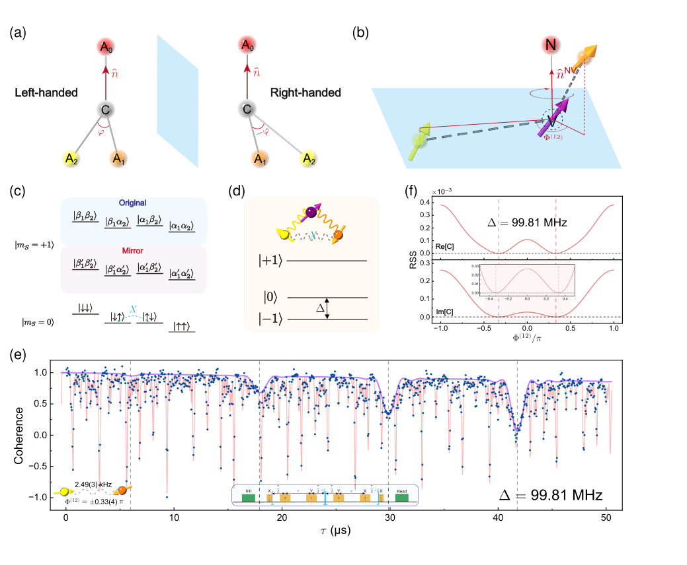
<figcaption class="paper-figure-caption"><b>Fig 1.</b> FIG. 1. Chiral molecules, chiral discrimination and dynamics of the nearby nuclear spins. (a)</figcaption>
</figure>
<figure class="paper-figure-card">
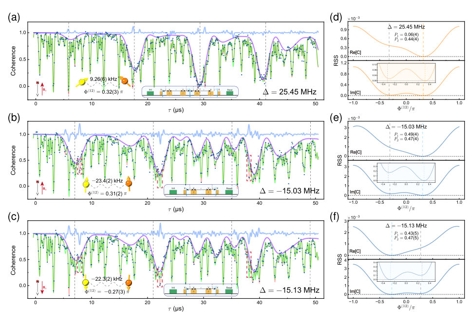
<figcaption class="paper-figure-caption"><b>Fig 2.</b> FIG. 2. Chiral discrimination through symmetry-breaking dynamics of two nuclear spins under spin</figcaption>
</figure>
<figure class="paper-figure-card">
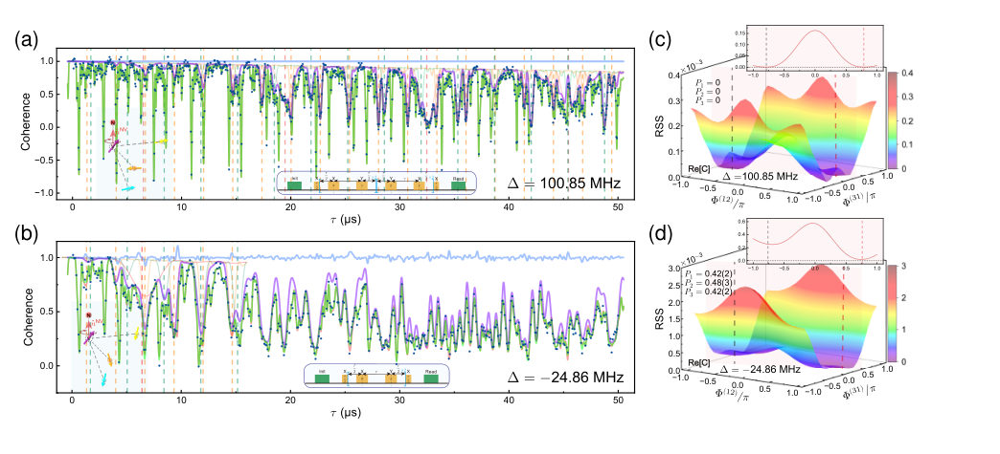
<figcaption class="paper-figure-caption"><b>Fig 3.</b> FIG. 3. Quantum three-body dynamics for chiral discrimination. (a) Three-body dynamics of</figcaption>
</figure>
<figure class="paper-figure-card">
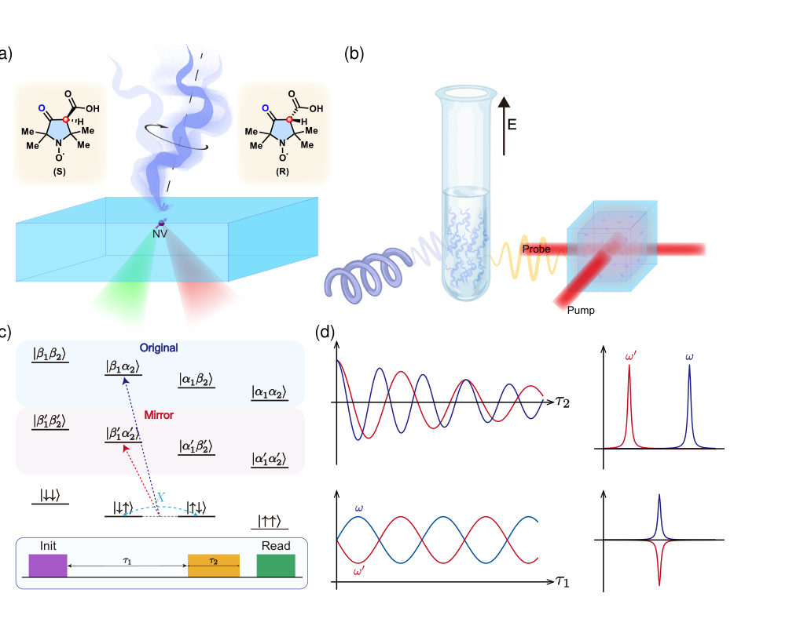
<figcaption class="paper-figure-caption"><b>Fig 4.</b> FIG. 4. Generalization and the underlying principle. (a) Setup for chiral discrimination of single</figcaption>
</figure>
<figure class="paper-figure-card">
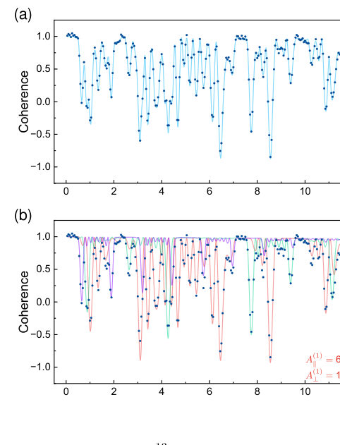
<figcaption class="paper-figure-caption"><b>Fig 5.</b> Fig. 2 of the main text.</figcaption>
</figure>
</div>

<p><strong>Summary.</strong> The authors present an MR-based technique to determine the absolute chirality of single molecules by analyzing symmetry-breaking dynamics among coupled nuclear spins. They show that while standard MR spectra are blind to chirality, measuring spin evolution after polarizing the system reveals a unique signature dependent on molecular handedness. This method offers a novel quantum tool for chemistry and biology.</p>
<p><strong>Why it may be interesting.</strong> This work provides a powerful quantum sensing platform using solid-state defects (NV centers) to probe fundamental symmetries related to molecular structure, bridging quantum information concepts with chirality detection in condensed matter systems.</p>
<details>
<summary>Detailed structure</summary>
<p><strong>Main problem.</strong> The primary goal is to achieve direct molecular chiral discrimination at the single-molecule level using magnetic resonance (MR) spectroscopy.</p>
<p><strong>Main result.</strong> Chirality is successfully determined by observing how the spin dynamics diverge when the system transitions from unpolarized to partially polarized states, breaking the joint symmetry of mirror reflection and time reversal in spin space.</p>
<p><strong>Method.</strong> The method involves constructing and analyzing the symmetry-breaking dynamics of nearby nuclear spins coupled to an electron spin using single-molecule MR techniques.</p>
<p><strong>Model / system.</strong> The system utilizes Nitrogen-Vacancy (NV) centers in diamond, probing the quantum three-body dynamics of coupled $^{13}	ext{C}$ nuclear spins. The analysis involves Hamiltonian modeling and measuring coherence under dynamical decoupling sequences.</p>
<p><strong>Key observables.</strong> Chirality-related phases ($\Phi(ij)$), population differences ($P|_{+
angle} - P_{|0
angle}$), and the deviation of spin dynamics from unpolarized expectations.</p>
<p><strong>Important parameters / regimes.</strong> Electron spin gap ($\Delta$), magnetic field strength, and hyperfine coupling parameters derived from DFT calculations.</p>
<p><strong>Assumptions / limitations.</strong> The method assumes that molecular chirality manifests as a breaking of MT-symmetry in the measured spin dynamics when polarization is induced.</p>
<p><strong>Figures summary.</strong> Figures illustrate the energy spectra comparison (Fig. 1(c)), dynamical profiles showing divergence upon polarization (Figs. 2, 3), and methods for determining NV axis direction using electric fields (Fig. S8).</p>
<p><strong>Paper structure.</strong> The paper progresses from establishing the need for chiral discrimination to detailing the MR-based measurement technique, analyzing two-body and then three-body spin dynamics under varying polarization levels, and finally confirming the results via field reversal and comparison with theoretical calculations.</p>
</details>
<details>
<summary>Abstract</summary>
<p>Molecular chirality plays a crucial role in physics, chemistry, life sciences and pharmacology. Nowadays, the chiral discrimination and control at the single-molecule level is urgently needed to reveal the origin of the chirality-relevant phenomena by recovering the information disturbed by the ensemble averaging. The method of magnetic resonance (MR), as one of powerful tools for structure analysis, is blind to the molecular chirality in the absence of a chiral reagent. Here we propose and experimentally demonstrate a direct MR-based method for determining the chirality at the single-molecule level through constructing the symmetry-breaking dynamics of nearby nuclear spins. In principle, the mirror asymmetry of two enantiomers in real space is manifested by breaking the joint symmetry of the mirror reflection and time reversal in spin space under spin dynamics. Experimentally, two enantiomers are indistinguishable from the dynamics of strongly-coupled but unpolarized nuclear spins, but diverge evidently in the dynamical results that break the field-inversion symmetry after spins are polarized. Our method and results will benefit the study of chirality-induced properties in the fields of chemistry and biology.</p>
</details>
<p><sub><a href="#top">↑ back to top</a></sub></p>

<p><a id="paper-2607.22403"></a></p>
<h3 id="non-markovian-heavy-quark-equilibration-and-equilibrium-correlation-function-in-a-thermal-medium"><a href="http://arxiv.org/abs/2607.22403v1">Non-Markovian heavy-quark equilibration and equilibrium correlation function in a thermal medium</a></h3>
<p><strong>Authors:</strong> Monisha Nair, Juan Torres-Rincon, Santosh K. Das<br>
<strong>Type:</strong> theory · <strong>Category:</strong> statistical mechanics · <strong>PDF:</strong> <a href="https://arxiv.org/pdf/2607.22403v1">https://arxiv.org/pdf/2607.22403v1</a><br>
<strong>Analysis basis:</strong> full PDF text, analyzed in chunks
<strong>Topic relevance:</strong> 🔥 <code>Keldysh / 2PI / non-Gaussian methods</code> <strong>4/5</strong> · <code>methods for driven-dissipative</code> <strong>3/5</strong> · <code>non-equilibrium dynamics</code> <strong>3/5</strong> · <code>non-equilibrium universality</code> <strong>2/5</strong> · <code>correlated / nonlocal dissipation</code> <strong>1/5</strong> · <code>driven-dissipative phase transition</code> <strong>1/5</strong></p>
<div class="figure-strip-hint">↔ Scroll figures horizontally</div>
<div class="paper-figures-scroll">
<figure class="paper-figure-card">
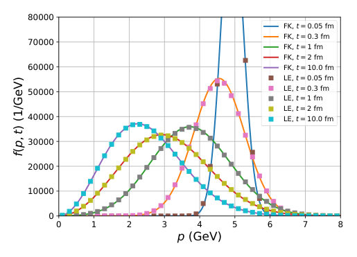
<figcaption class="paper-figure-caption"><b>Fig 1.</b> FIG. 1: Heavy-quark momentum distribution (dN/dp) evolution obtained from numerical Langevin simulations in a non-relativistic system (LE) and the analytical solution of the Fokker–Planck equation (FP). Results are shown for a drag coefficient A = 0.4 fm−1, temperature T = 0.1 GeV, mass m = 25 GeV, an ensemble size of N = 105 and Nev = 50 events.</figcaption>
</figure>
<figure class="paper-figure-card">
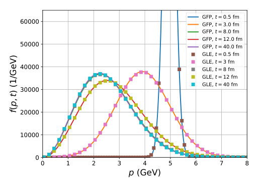
<figcaption class="paper-figure-caption"><b>Fig 2.</b> FIG. 3: Heavy-quark momentum distribution (dN/dp) evolution obtained from numerical generalized numerical Langevin simulations in a non-relativistic system (GLE) and the analytical solution of the generalized Fokker–Planck equation (GFP). Results are shown for a drag coefficient A = 0.4 fm−1, temperature T = 0.1 GeV, mass m = 25 GeV, memory time τm = 5 fm, an ensemble size of N = 105 and Nev = 50 events.</figcaption>
</figure>
<figure class="paper-figure-card">
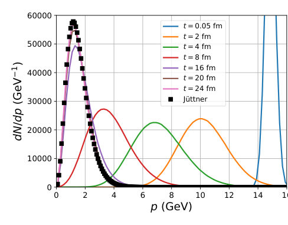
<figcaption class="paper-figure-caption"><b>Fig 3.</b> FIG. 2: Heavy-quark momentum distribution (dN/dp) evolution obtained from numerical Langevin simulations in a relativistic system. Results are shown for a drag coefficient A = 0.2 fm−1, temperature T = 0.4 GeV, mass m = 1.27 GeV, an ensemble size of N = 105, and Nev = 50 events.</figcaption>
</figure>
<figure class="paper-figure-card">
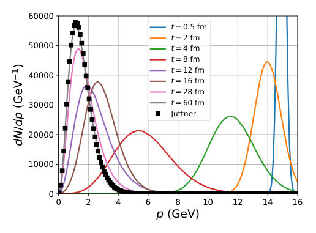
<figcaption class="paper-figure-caption"><b>Fig 4.</b> FIG. 4: Heavy-quark momentum distribution (dN/dp) evolution obtained from numerical generalized Langevin simulations in a relativistic system. Results are shown for a drag coefficient A = 0.2 fm−1, temperature T = 0.4 GeV, mass m = 1.27 GeV, memory time τm = 5 fm, an ensemble size of N = 105, and Nev = 50 events.</figcaption>
</figure>
<figure class="paper-figure-card">
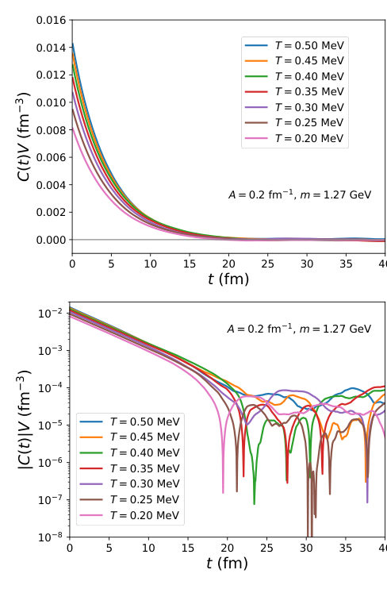
<figcaption class="paper-figure-caption"><b>Fig 5.</b> FIG. 5: Volume-scaled heavy-quark current–current correlation function C(t) V as a function of time in a static box at various temperatures, evaluated without memory effects.</figcaption>
</figure>
</div>

<p><strong>Summary.</strong> This paper theoretically analyzes how heavy quarks thermalize and diffuse in a hot medium by extending standard Langevin descriptions to include memory effects. It calculates transport coefficients like the diffusion coefficient using correlation functions derived from generalized Fokker-Planck equations. The findings show that while memory introduces oscillatory behavior, it maintains consistency with established results in certain limits.</p>
<p><strong>Why it may be interesting.</strong> The incorporation of non-Markovian dynamics is crucial for accurately modeling relaxation processes in strongly coupled systems where memory effects cannot be ignored, providing a more realistic description than simple white noise approximations.</p>
<details>
<summary>Detailed structure</summary>
<p><strong>Main problem.</strong> The study investigates heavy-quark (HQ) equilibration and correlation functions within a thermal medium, specifically focusing on incorporating non-Markovian memory effects.</p>
<p><strong>Main result.</strong> Memory effects qualitatively alter the transient structure of current correlations but do not change the transport coefficient in the non-relativistic limit; however, they can induce damped, oscillatory equilibration in the relativistic case.</p>
<p><strong>Method.</strong> The analysis employs kinetic theory approaches, utilizing generalized Langevin equations and comparing solutions derived from both the generalized Fokker-Planck equation and the corresponding Langevin framework.</p>
<p><strong>Model / system.</strong> The system models heavy quarks (charm/beauty) propagating through a hot, dense medium like the Quark-Gluon Plasma. The dynamics are governed by stochastic processes incorporating memory kernels into the standard Markovian description.</p>
<p><strong>Key observables.</strong> Heavy-quark diffusion coefficient ($D_s$), HQ momentum distribution function $f(\mathbf{p}, t)$, and current–current correlation functions $\langle \mathbf{j}(t) \cdot \mathbf{j}(0) 
angle$.</p>
<p><strong>Important parameters / regimes.</strong> Temperature ($T$), heavy quark mass ($m$), drag coefficient ($A$), and memory time ($   au_m$). The analysis compares non-relativistic (NR) and relativistic limits.</p>
<p><strong>Assumptions / limitations.</strong> The work assumes space homogeneity, uses the Green-Kubo formula to relate transport coefficients to equilibrium correlations, and often relies on approximations like constant drag coefficients or assumed exponential decay forms for correlation functions at large times.</p>
<p><strong>Figures summary.</strong> Figures illustrate the time evolution of $D_s(t^*)$ calculated via integrating the current-current correlation function $C(t)$, showing plateaus that approach an asymptotic value, which is sensitive to the chosen integration cutoff time $t^*$.</p>
<p><strong>Paper structure.</strong> The paper builds from establishing the foundational Langevin/Fokker-Planck framework (Markovian case), extending it to include memory effects via generalized equations, calculating key observables like $D_s$ using Green-Kubo relations in both NR and relativistic limits, and finally comparing numerical solutions across different time regimes.</p>
</details>
<details>
<summary>Abstract</summary>
<p>We compute the charm-quark current-current correlation function within the Langevin framework and extract the heavy-quark diffusion coefficient using the Green--Kubo formula. The formalism is further extended to evaluate the correlation function using a generalized Langevin equation that incorporates memory effects via an exponentially decaying memory kernel. We find that while memory effects qualitatively modify the transient structure of the current correlations, the value of the transport coefficient remains unchanged in the non-relativistic limit. In addition, we investigate heavy-quark thermalization in the presence of memory and compare the non-equilibrium solution of a generalized Fokker--Planck equation with the one obtained from the generalized Langevin equation in the non-relativistic limit. We also consider the relativistic version of the correlated noise case and observe that memory effects can give rise to a damped, oscillatory equilibration of the heavy quark in a non-Markovian bath.</p>
</details>
<p><sub><a href="#top">↑ back to top</a></sub></p>

<p><a id="paper-2607.21940"></a></p>
<h3 id="proposal-for-estimating-the-energy-gap-of-the-transverse-field-ising-hamiltonian-using-a-d-wave-quantum-annealer"><a href="http://arxiv.org/abs/2607.21940v1">Proposal for Estimating the Energy Gap of the Transverse-Field Ising Hamiltonian Using a D-Wave Quantum Annealer</a></h3>
<p><strong>Authors:</strong> Kota Yamada, Yuichiro Matsuzaki<br>
<strong>Type:</strong> both · <strong>Category:</strong> quantum information and computing · <strong>PDF:</strong> <a href="https://arxiv.org/pdf/2607.21940v1">https://arxiv.org/pdf/2607.21940v1</a><br>
<strong>Analysis basis:</strong> full PDF text, analyzed in chunks
<strong>Topic relevance:</strong> 🔥 <code>analog quantum simulation</code> <strong>4/5</strong> · <code>QC/QI experiment</code> <strong>2/5</strong> · <code>methods for driven-dissipative</code> <strong>2/5</strong> · <code>non-equilibrium dynamics</code> <strong>2/5</strong> · <code>quantum measurements</code> <strong>2/5</strong> · <code>driven-dissipative phase transition</code> <strong>1/5</strong> · <code>exotic spin models in light-matter</code> <strong>1/5</strong></p>
<div class="figure-strip-hint">↔ Scroll figures horizontally</div>
<div class="paper-figures-scroll">
<figure class="paper-figure-card">
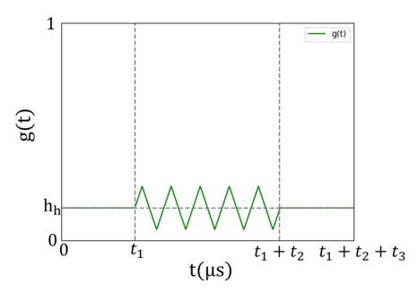
<figcaption class="paper-figure-caption"><b>Fig 1.</b> FIG. 2: Value of g(t) as a function of time t. hh denotes the central value of the oscillating magnetic field.</figcaption>
</figure>
<figure class="paper-figure-card">
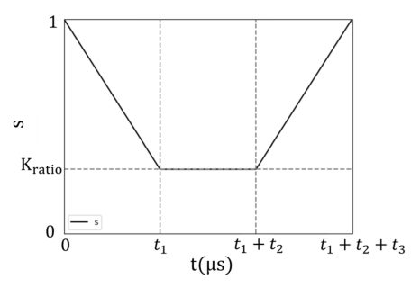
<figcaption class="paper-figure-caption"><b>Fig 2.</b> FIG. 3: Value of s as a function of time t. Kratio denotes the minimum value of s during the annealing schedule.</figcaption>
</figure>
<figure class="paper-figure-card">
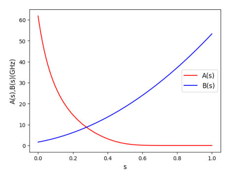
<figcaption class="paper-figure-caption"><b>Fig 3.</b> FIG. 1: Annealing schedules A(s) and B(s) as func- tions of s for the standard annealing schedule of the D- Wave Advantage system4.1 solver [25]. The horizontal axis represents s, while the vertical axis represents A(s) (GHz) and B(s) (GHz).</figcaption>
</figure>
<figure class="paper-figure-card">
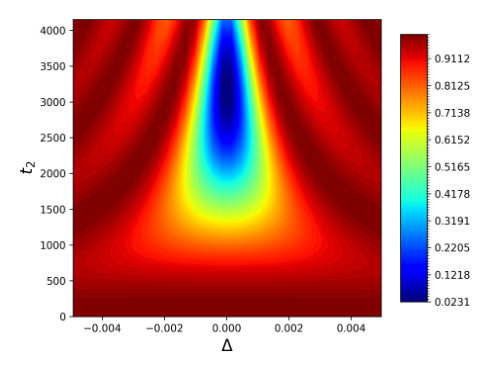
<figcaption class="paper-figure-caption"><b>Fig 4.</b> FIG. 4: Occupation probability of the ground state at t = t1 + t2 + t3. The x-axis represents ∆= ωdrive −ω01, the y-axis represents the duration of the applied oscil- lating magnetic field t2, and the z-axis represents the occupation probability of the ground state. Here, ωdrive denotes the driving frequency of the triangular wave, and ω01 = 0.756580(GHz) is the energy difference between the ground state and the first excited state. The param- eters are set to L = 2, λ = 0.01, J = −1, h = −0.01, hh = 1, Kratio = 0.4004004, t1 = t3 = 240(ns).</figcaption>
</figure>
<figure class="paper-figure-card">
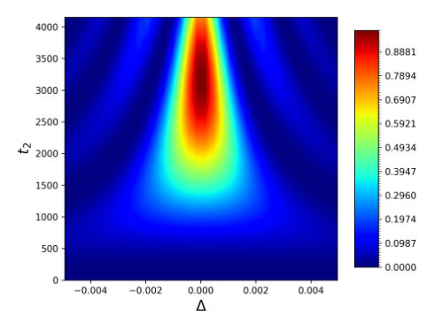
<figcaption class="paper-figure-caption"><b>Fig 5.</b> FIG. 5: Occupation probability of the first excited state at t = t1+t2+t3. The x-axis represents ∆= ωdrive−ω01, the y-axis represents the duration of the applied oscillat- ing magnetic field t2, and the z-axis represents the occu- pation probability of the first excited state. Here, ωdrive denotes the driving frequency of the triangular wave, and ω01 = 0.756580(GHz) represents the energy difference be- tween the ground state and the first excited state. The parameters are the same as those used in Fig. 4.</figcaption>
</figure>
</div>

<p><strong>Summary.</strong> The paper proposes using D-Wave quantum annealers to estimate the energy gap of the Transverse-Field Ising Hamiltonian by inducing and measuring Rabi oscillations. By applying a triangular-wave modulated magnetic field, they circumvent classical limitations on accessing excited states. This technique proves a promising pathway for simulating complex quantum systems on current quantum hardware.</p>
<p><strong>Why it may be interesting.</strong> This work is highly relevant as it bridges fundamental condensed matter physics (Ising model) with near-term quantum hardware capabilities, providing a concrete protocol for accessing excited state information beyond simple ground-state optimization.</p>
<details>
<summary>Detailed structure</summary>
<p><strong>Main problem.</strong> The primary goal is estimating the energy gap between the ground and first excited states of the Transverse-Field Ising Hamiltonian for large systems.</p>
<p><strong>Main result.</strong> The authors successfully demonstrated a method using D-Wave quantum annealers to estimate these gaps by observing Rabi resonance, confirming applicability on small 2D lattices.</p>
<p><strong>Method.</strong> They propose inducing Rabi oscillations using a triangular-wave modulated magnetic field on the quantum annealer, and then fitting the resulting spectral response with a Lorentzian function to extract the gap frequency.</p>
<p><strong>Model / system.</strong> The system studied is the Transverse-Field Ising model ($\hat{H}_p$), which models competition between quantum fluctuations and interactions. The computation is performed using a D-Wave quantum annealer, simulating periodic driving via linear control of the longitudinal magnetic field $g(t)$.</p>
<p><strong>Key observables.</strong> The primary observable is the population transfer (or ground state occupation probability) as a function of the sweeping driving frequency ($\omega_{drive}$), which exhibits resonance peaks.</p>
<p><strong>Important parameters / regimes.</strong> Key parameters include the energy gap $\omega_{01}$, the driving strength, and hardware limitations such as the time resolution ($\approx 10	ext{ ns}$) and waveform programmability limits.</p>
<p><strong>Assumptions / limitations.</strong> The method assumes that higher harmonics of the triangular wave are negligible near resonance, and it relies on approximating complex periodic driving fields with linear control over $g(t)$.</p>
<p><strong>Figures summary.</strong> Figures illustrate annealing schedules, the time evolution of the magnetic field $g(t)$, and crucially, the spectral response curves showing Lorentzian fits to determine $\omega_{01}$ for various qubit numbers and 2D lattices.</p>
<p><strong>Paper structure.</strong> The paper first introduces the physical problem (energy gap estimation) and computational limitations. It then details the novel methodology using D-Wave hardware to simulate Rabi oscillations via triangular driving fields. Finally, it presents numerical results confirming the method's accuracy on small systems like 2-qubit and $2 	imes 3$ lattices.</p>
</details>
<details>
<summary>Abstract</summary>
<p>The transverse-field Ising model is a fundamental quantum spin system that captures the competition between quantum fluctuations and interactions, playing a central role in studies of quantum phase transitions and non-equilibrium dynamics. However, classical computations of ground and excited states in large-scale or high-dimensional systems are severely limited by the exponential growth of the Hilbert space. Here, we propose a novel approach using a D-Wave quantum annealer, where a triangular-wave oscillating magnetic field is applied to induce Rabi oscillations, allowing the estimation of energy gaps between the ground and excited states. Unlike conventional quantum annealing methods limited to ground-state searches, this approach can directly access excited-state information. It is potentially applicable to larger systems, providing a new avenue for quantum-device-based simulation. The validity of the method is demonstrated through numerical simulations of relatively small systems.</p>
</details>
<p><sub><a href="#top">↑ back to top</a></sub></p>

<p><a id="paper-2607.22451"></a></p>
<h3 id="entanglement-in-presence-of-topological-interfaces-and-dualities"><a href="http://arxiv.org/abs/2607.22451v1">Entanglement in Presence of Topological Interfaces and Dualities</a></h3>
<p><strong>Authors:</strong> Christian Northe, Riccardo Poletti, Paolo Rossi<br>
<strong>Type:</strong> theory · <strong>Category:</strong> statistical mechanics · <strong>PDF:</strong> <a href="https://arxiv.org/pdf/2607.22451v1">https://arxiv.org/pdf/2607.22451v1</a><br>
<strong>Analysis basis:</strong> full PDF text, analyzed in chunks
<strong>Topic relevance:</strong> 🔥 <code>entanglement &amp; information structure</code> <strong>4/5</strong> · <code>non-equilibrium dynamics</code> <strong>2/5</strong> · <code>Keldysh / 2PI / non-Gaussian methods</code> <strong>1/5</strong> · <code>analog quantum simulation</code> <strong>1/5</strong> · <code>correlated / nonlocal dissipation</code> <strong>1/5</strong> · <code>driven-dissipative phase transition</code> <strong>1/5</strong> · <code>methods for driven-dissipative</code> <strong>1/5</strong> · <code>non-equilibrium universality</code> <strong>1/5</strong></p>
<div class="figure-strip-hint">↔ Scroll figures horizontally</div>
<div class="paper-figures-scroll">
<figure class="paper-figure-card">
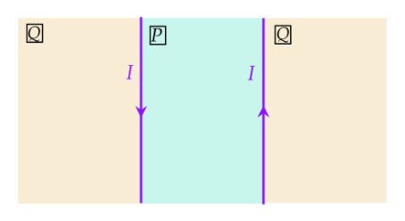
<figcaption class="paper-figure-caption"><b>Fig 1.</b> Figure 1. From right to left: Phase Q is mapped into phase P by a PQ interface I and back by the same orientation-reversed interface. The arrow on the left interface may be inverted at the price of relabeling I →¯I. ¯I is a QP interface.</figcaption>
</figure>
<figure class="paper-figure-card">
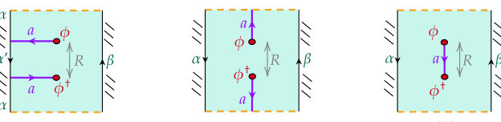
<figcaption class="paper-figure-caption"><b>Fig 2.</b> Figure 2. Twist field RDMs obtained by qualitatively different choices of defect networks, in the strip frame (A.7). Here we assumed minimal fusion rules N c ab ∈{0, 1}, otherwise one should add extra labels for the (αaα′) junctions in (i). As in (1.2), these should be normalized to ensure Trρϕ,a αβ = 1. The normalization factor is the correlator obtained by gluing the ends of the strip. The parameter R accounts for the (dimensionless) length of the interval, see appendix A.</figcaption>
</figure>
<figure class="paper-figure-card">
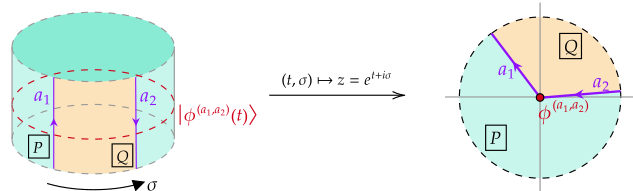
<figcaption class="paper-figure-caption"><b>Fig 3.</b> Figure 3. System in the presence of two interface lines a1, a2 separating phases P and Q. In radial quantization, the state |ϕ(a1,a2)⟩corresponding to the interface field ϕ(a1,a2) sits at the junction between a1 and a2.</figcaption>
</figure>
<figure class="paper-figure-card">
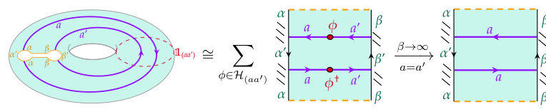
<figcaption class="paper-figure-caption"><b>Fig 4.</b> Figure 4. Steps to simplify the RDM for the thermal state. ∼= means a relation through an appropriate conformal map. The β0 →∞limit is meaningful only for a = a′ and selects the vacuum state on the defect, reproducing a special case of (4.2) for P = Q.</figcaption>
</figure>
<figure class="paper-figure-card">
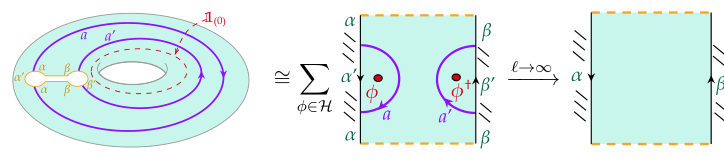
<figcaption class="paper-figure-caption"><b>Fig 5.</b> Figure 5. Another simplification of the RDM for the thermal state. Using the S-transformed frame, the identity decomposition is in terms of bulk fields. The ℓ→∞limit selects the vacuum state, after which the defect network can be simplified and one recovers the bulk vacuum RDM.</figcaption>
</figure>
</div>

<p><strong>Summary.</strong> This paper develops a generalized framework for calculating entanglement across topological interfaces connecting different Conformal Field Theories. The key finding is that duality interfaces project the system's quantum correlations onto specific symmetry sectors, mirroring symmetry resolution but arising naturally from the physical boundary itself. This provides a rigorous tool to quantify how dual theories constrain quantum information at their junction.</p>
<p><strong>Why it may be interesting.</strong> The mechanism described—where physical boundaries naturally impose symmetry constraints on entanglement—provides a powerful theoretical tool applicable to understanding boundary effects and correlation structure in complex many-body systems beyond simple thermalization assumptions.</p>
<details>
<summary>Detailed structure</summary>
<p><strong>Main problem.</strong> The work extends the theory of entanglement through topological defects/interfaces, specifically focusing on interfaces connecting two distinct Conformal Field Theories (CFTs), particularly when these theories are dual to each other.</p>
<p><strong>Main result.</strong> For duality interfaces, the reduced density matrix acts as a projector onto a fixed-charge subsector of the vacuum's entanglement spectrum, naturally reflecting quantum correlations back into the entangling interval.</p>
<p><strong>Method.</strong> The authors utilize a framework involving 'twisted states' to construct the full reduced density matrix (RDM) and employ relative entropy to quantify the distinguishability between the interface RDM and the vacuum RDM.</p>
<p><strong>Model / system.</strong> The study is set in 1+1 dimensional CFTs, with specific examples including the free boson CFT and systems exhibiting duality relations (e.g., Kramers-Wannier or T-duality).</p>
<p><strong>Key observables.</strong> Reduced Density Matrix (RDM), Entanglement Entropy ($S$), Relative Entropy, and the entanglement spectrum.</p>
<p><strong>Important parameters / regimes.</strong> The nature of the CFTs (diagonal/non-diagonal rational, free boson) and the specific type of interface (duality vs. general).</p>
<p><strong>Assumptions / limitations.</strong> Previous foundational theories for interface entropies are noted to be incompatible with numerical results; the framework extends prior work on defects to distinct CFT interfaces.</p>
<p><strong>Figures summary.</strong> Figure 1 illustrates the mapping between two phases P and Q connected by an interface I (and $\bar{I}$).</p>
<p><strong>Paper structure.</strong> The paper first establishes the general framework for entanglement through topological defects, then applies it to study interfaces connecting distinct CFTs, culminating in a detailed analysis of how duality interfaces project quantum correlations.</p>
</details>
<details>
<summary>Abstract</summary>
<p>Entanglement through interfaces has attracted considerable attention in 2d conformal field theory (CFT). However, it is known that field-theoretic predictions based on the existing framework are in general incompatible with numerical results [1-4]. A new framework for entanglement through topological defects was recently proposed in [5]. It provides a general description of entanglement through topological defects and successfully reproduces the numerical results for the Ising model in all tested cases and regimes. The key insight is that the relevant quantum correlations are encoded in twisted states, allowing for the construction of the full reduced density matrix (RDM). In this work we pursue two objectives. First, we provide new examples by studying defects in the free boson CFT. Second, we extend the framework to topological interfaces connecting two, possibly distinct, CFTs. Of particular interest are interfaces relating dual theories. We show that the reduced density matrix for a duality interface is the projection of the vacuum reduced density matrix onto a single symmetry sector, closely paralleling the framework of symmetry resolution. Unlike symmetry resolution, however, the projection is imposed by the physical interface itself, demonstrating that duality interfaces reflect quantum correlations back into the entangling interval. We establish this mechanism for diagonal and non-diagonal rational CFTs as well as the free boson CFT. Relative entropy allows us to quantify the distinguishability of the duality interface RDM from the vacuum RDM.</p>
</details>
<p><sub><a href="#top">↑ back to top</a></sub></p>

<p><a id="paper-2607.21705"></a></p>
<h3 id="counting-edge-modes-with-the-higher-berry-curvature-a-bulk-topological-order-parameter-for-quantum-spin-chains"><a href="http://arxiv.org/abs/2607.21705v1">Counting Edge Modes with the Higher Berry Curvature: A Bulk Topological Order Parameter for Quantum Spin Chains</a></h3>
<p><strong>Authors:</strong> Adam J. McRoberts, Joe Crossley, Chris Hooley, Joe H. Winter<br>
<strong>Type:</strong> theory · <strong>Category:</strong> strongly correlated electrons · <strong>PDF:</strong> <a href="https://arxiv.org/pdf/2607.21705v1">https://arxiv.org/pdf/2607.21705v1</a><br>
<strong>Analysis basis:</strong> full PDF text, analyzed in chunks
<strong>Topic relevance:</strong> 🔥 <code>analog quantum simulation</code> <strong>4/5</strong> · <code>entanglement &amp; information structure</code> <strong>3/5</strong> · <code>exotic spin models in light-matter</code> <strong>3/5</strong> · <code>Frenkel-Kontorova</code> <strong>1/5</strong></p>
<div class="figure-strip-hint">↔ Scroll figures horizontally</div>
<div class="paper-figures-scroll">
<figure class="paper-figure-card">
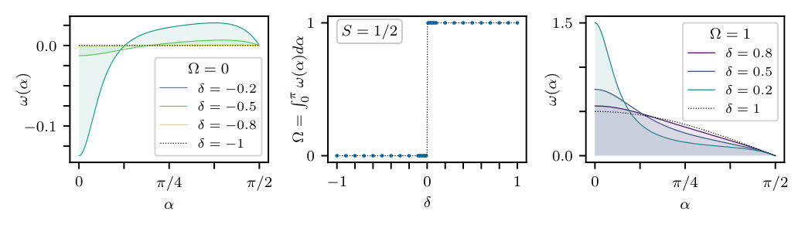
<figcaption class="paper-figure-caption"><b>Fig 1.</b> FIG. 1. Higher Berry curvature and the integer-valued HBC order parameter for the S = 1/2 spin-Peierls chain, with the Hamiltonian given in Eq. (16), where δ is the staggering between the coupling strengths J(1 −δ) of odd bonds and J(1 + δ) of even bonds. (Left) Representative HBC functions ω(α) for selected values of δ in the Ω= 0 phase, where a cut through an even bond does not produce any gapless edge modes; and (Right) The same, but for the Ω= 1 phase, where a cut through an even bond produces a protected free spin-1/2 edge mode on each side. For a given δ, we use a maximum field strength h = 1 + |δ|. (Middle) HBC order parameter Ω, defined by Eqs. (7)-(10), as a function of δ. For δ =...</figcaption>
</figure>
<figure class="paper-figure-card">
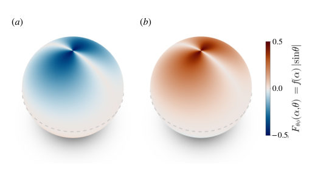
<figcaption class="paper-figure-caption"><b>Fig 2.</b> FIG. 2. Singularities in F, the 2-form Berry curvature for the left-half of the chain, for the exactly solvable model ˆH = ˆHN 0 . This Hamiltonian has Ω= 1, meaning F (Eq. (14)) is ill- defined at (at least one of) the poles of S3. In the images shown, the polar angle is α, and the azimuthal angle is θ (ϕ cannot be shown). The function plotted is f(α, θ), where F = f(α, θ) dθ ∧dϕ. A view of the singularity at the north pole α = 0 is shown in (a); and the image is rotated by π in (b) to give a view of the south pole α = π. Note that to obtain a closed 2-sphere we have, just for these images, extended the range of θ from [0, π] to [0, 2π), and correspondingly cut the range of ϕ from [−π, π)...</figcaption>
</figure>
<figure class="paper-figure-card">
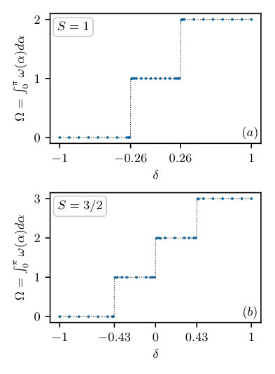
<figcaption class="paper-figure-caption"><b>Fig 3.</b> FIG. 3. HBC order parameter as a function of the bond- strength staggering δ for the (a) S = 1 and (b) S = 3/2 spin-Peierls chains, cf. Eq. (16). As expected, the HBC order parameter measures the spin of the protected gapless edge modes in each phase, cf. the discussion in the main text. The maximum field strength in all cases is h = 1.0. Each integral (10) is calculated from 1001 sampled values of ω(α), and the largest Schmidt weight discarded from any state is less than 10−8.</figcaption>
</figure>
<figure class="paper-figure-card">
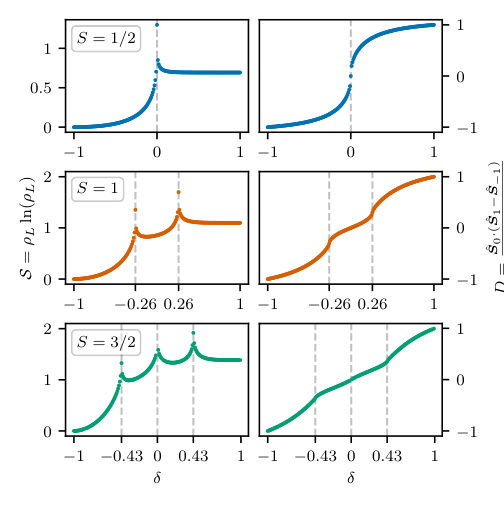
<figcaption class="paper-figure-caption"><b>Fig 4.</b> FIG. 4. Entanglement entropy (left) and dimer-order (right) as a function of bond-strength staggering δ in the S = 1/2, S = 1, and S = 3/2 spin-Peierls chains (16), for comparison with the HBC order parameter (Figs. 1 &amp; 3). The spikes in the entanglement entropy at the critical points are clear signa- tures of the transitions, and their locations are in agreement with those found by the HBC order parameter. The dimer- order does not show the transition points quite as clearly, though it does have features reminiscent of non-analyticities at the correct points. The largest Schmidt weight discarded from any state is less than 10−8.</figcaption>
</figure>
<figure class="paper-figure-card">
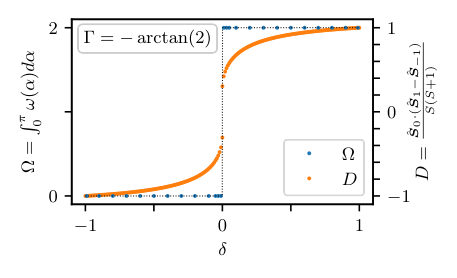
<figcaption class="paper-figure-caption"><b>Fig 5.</b> FIG. 5. HBC and dimer order parameters for the bilinear- biquadratic chain (19) at Γ = −arctan(2) ≈−1.107. There is a first-order transition at δ = 0, where there is spontaneous dimerisation, and the dimer order parameter is discontinuous. The HBC order parameter Ωjumps from 0 to 2 across this transition. Each value of Ωwas obtained from 1001 sampled values of ω(α), and the largest Schmidt weight discarded from any state was less than 10−8. As discussed in the main text, a strict SPT classification would consider the two sides to be same SPT phase—but, if only transformations for which the HBC is well-defined are permitted, any change in Ωalways requires a phase transition.</figcaption>
</figure>
</div>

<p><strong>Summary.</strong> The paper introduces the Higher Berry Curvature (HBC) as a novel, geometric tool to calculate a topological order parameter ($\Omega$) for quantum spin chains. This integer invariant quantifies the spin carried by gapless edge modes created when the chain is cut. By applying this method to various models, the authors demonstrate that $\Omega$ successfully maps out phase transitions and classifies different ground states.</p>
<p><strong>Why it may be interesting.</strong> This work provides a powerful geometric tool—the HBC integral—to calculate topological invariants for interacting quantum systems where simple single-particle descriptions fail. It connects bulk topology directly to measurable edge properties (edge modes), which is highly relevant for understanding boundary physics in condensed matter and AMO settings.</p>
<details>
<summary>Detailed structure</summary>
<p><strong>Main problem.</strong> To define a geometric, integer-valued topological order parameter for quantum spin chains that can distinguish between different phases where traditional methods fail.</p>
<p><strong>Main result.</strong> The Higher Berry Curvature (HBC) integral yields an integer invariant ($\Omega$) that quantifies the spin of gapless edge modes exposed by an entanglement cut. This invariant successfully distinguishes multiple gapped sectors in models like the staggered J1-J2 chain.</p>
<p><strong>Method.</strong> The method involves constructing a closed, extended family of Hamiltonians and integrating the associated Higher Berry Curvature (HBC) 3-form over the parameter space ($S^3$).</p>
<p><strong>Model / system.</strong> The study focuses on quantum spin chains, exemplified by $S=1/2$, $S=1$, and $S=3/2$ spin-Peierls chains, as well as the staggered $J_1$-$J_2$ chain. The analysis uses Hamiltonian extensions parameterized over a 3-manifold.</p>
<p><strong>Key observables.</strong> Higher Berry Curvature (HBC), Topological Order Parameter ($\Omega$), Gapless edge modes count, Spin content of entanglement boundary states.</p>
<p><strong>Important parameters / regimes.</strong> Spin quantum number ($S$), Dimerization parameter ($\delta$), Coupling constants ($J_1, J_2$).</p>
<p><strong>Assumptions / limitations.</strong> The method requires constructing a smooth family of normalized states over a compact manifold and relies on specific extensions to define the relative invariant.</p>
<p><strong>Figures summary.</strong> Figures illustrate the HBC ($\omega$) and the resulting order parameter ($\Omega$) for spin-Peierls chains across varying staggering parameters, showing $\Omega$ approaching integer values (0 or 1). Another figure shows the phase diagram of the $J_1$-$J_2$ chain with plots of $\omega(\alpha)$ for different phases.</p>
<p><strong>Paper structure.</strong> The paper develops the concept by first defining HBC as a diagnostic tool, then constructing an interpolating Hamiltonian family over $S^3$, calculating the quantized invariant ($\Omega$), and finally applying this machinery to various physical models (Spin-Peierls, $J_1$-$J_2$) to map out phase transitions.</p>
</details>
<details>
<summary>Abstract</summary>
<p>We show that the higher Berry curvature (HBC) can be used to count the gapless edge modes created by an entanglement cut, and thus defines an integer-valued topological order parameter for quantum spin chains. Given an individual spin-chain Hamiltonian, we construct an extending family by interpolating to a reference product Néel state, and show that the integral of the HBC over this extension is equal to the ordinary Berry phase of half of the chain swept out in response to an \textit{infinitesimal} field. It thus counts the spin of the gapless edge modes exposed by the cut, and a change in its integer value signals a phase transition. We illustrate this with several examples: $S=1/2$, $S=1$, and $S=3/2$ spin-Peierls chains, which undergo `singlet flop' transitions between different patterns of dimerisation; the bilinear-biquadratic chain, which clarifies the connection to the strict symmetry-protected topological phases classification; and the staggered $J_1$--$J_2$ chain, which has both nearest-neighbour and third-neighbour patterns of singlets depending on the signs of the interactions.</p>
</details>
<p><sub><a href="#top">↑ back to top</a></sub></p>

<p><a id="paper-2607.21907"></a></p>
<h3 id="entanglement-purification-for-arbitrary-multipartite-high-dimensional-greenberger-horne-zeilinger-state"><a href="http://arxiv.org/abs/2607.21907v1">Entanglement purification for arbitrary multipartite high-dimensional Greenberger-Horne-Zeilinger state</a></h3>
<p><strong>Authors:</strong> Yu-Qing Kong, Jia-Ye Liu, Hui-Hui Kong, Hai-Rui Wei<br>
<strong>Type:</strong> theory · <strong>Category:</strong> quantum information and computing · <strong>PDF:</strong> <a href="https://arxiv.org/pdf/2607.21907v1">https://arxiv.org/pdf/2607.21907v1</a><br>
<strong>Analysis basis:</strong> full PDF text, analyzed in chunks
<strong>Topic relevance:</strong> 🔥 <code>entanglement &amp; information structure</code> <strong>4/5</strong> · <code>quantum measurements</code> <strong>2/5</strong> · <code>correlated / nonlocal dissipation</code> <strong>1/5</strong> · <code>measurement-induced transitions</code> <strong>1/5</strong> · <code>methods for driven-dissipative</code> <strong>1/5</strong></p>
<div class="figure-strip-hint">↔ Scroll figures horizontally</div>
<div class="paper-figures-scroll">
<figure class="paper-figure-card">
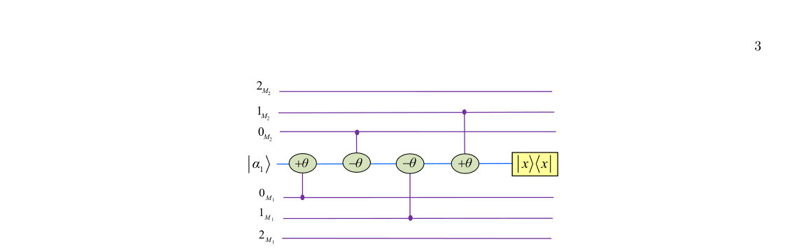
<figcaption class="paper-figure-caption"><b>Fig 1.</b> Figure 1: The principle of the proposed nondestructive quantum nondemolition detector (QND) in three-dimensional systems. |0⟩M, |1⟩M, and |2⟩M (|0⟩M ′, |1⟩M ′, and |2⟩M ′) are the three temporal-DOF of single-photon system M1 (M2).</figcaption>
</figure>
<figure class="paper-figure-card">
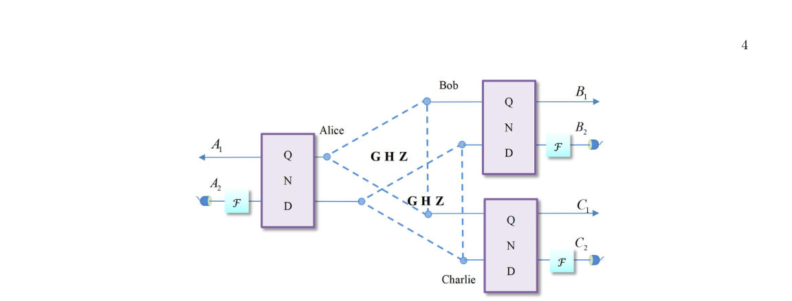
<figcaption class="paper-figure-caption"><b>Fig 2.</b> Figure 2: Schematic principle of the entanglement purification protocol for correcting qutrit-flip errors in three-dimensional GHZ states.</figcaption>
</figure>
<figure class="paper-figure-card">
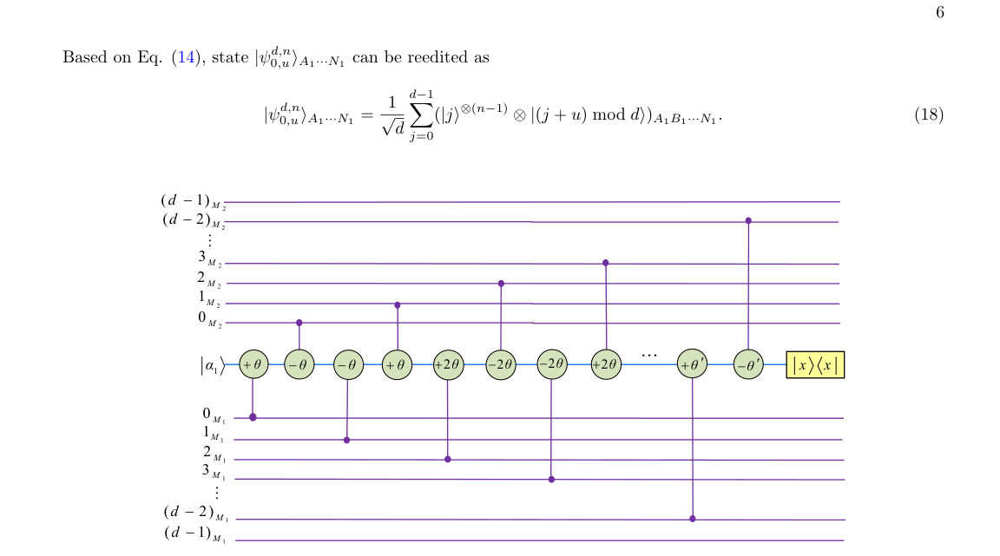
<figcaption class="paper-figure-caption"><b>Fig 3.</b> Figure 3: The principle of the proposed QND in qudit systems. Phase shifts +θ, −θ, +2θ, −2θ, +3θ, −3θ, +4θ, −4θ, · · · , θ′ are introduced to the states 0M1, 1M1, 2M1, 3M1, 4M1, 5M1, 6M1, 7M1, · · · , (d −2)M1, respectively. Phase shifts −θ, +θ, −2θ, +2θ, −3θ, +3θ, −4θ, +4θ, · · · , −θ′ are introduced to the states 0M2, 1M2, 2M2, 3M2, 4M2, 5M2, 6M2, 7M2, · · · , (d −2)M2, respectively. Here θ′ = (−1)n  n+1</figcaption>
</figure>
<figure class="paper-figure-card">
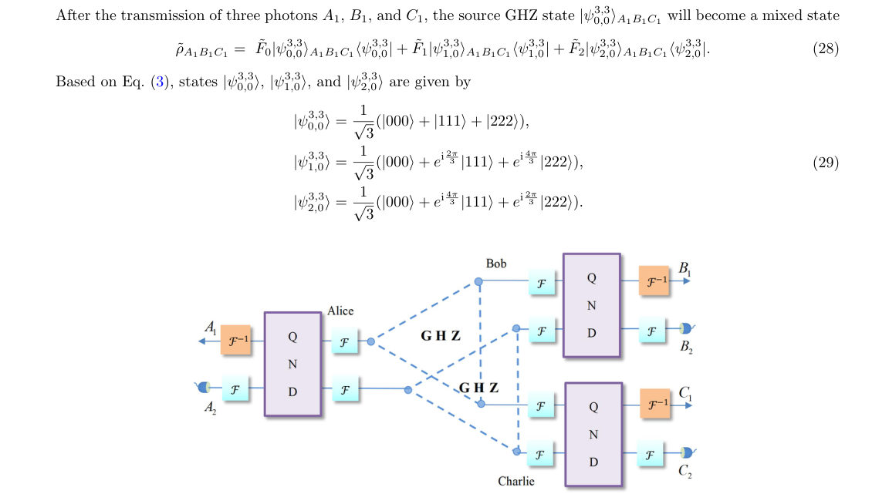
<figcaption class="paper-figure-caption"><b>Fig 4.</b> Figure 4: Schematic of the entanglement purification protocol for rectifying phase-flip errors in three-dimensional GHZ states.</figcaption>
</figure>
<figure class="paper-figure-card">
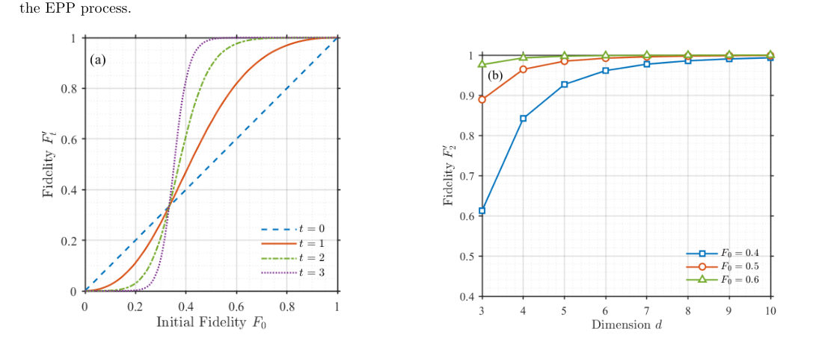
<figcaption class="paper-figure-caption"><b>Fig 5.</b> Figure 5: Fidelity of the EPP protocol for correcting qutrit-flip errors. (a) The fidelity F ′ t as a function of input fidelity F0, where d = 3 and the iterative rounds t = 0, 1, 2, 3. (b) The fidelity F ′ 2 as a function of the dimension d, where t = 2 and F0 = 0.4, 0.5, 0.6.</figcaption>
</figure>
</div>

<p><strong>Summary.</strong> This paper develops advanced entanglement purification protocols specifically tailored for multipartite Greenberger-Horne-Zeilinger (GHZ) states encoded in high-dimensional qudits. By employing QND measurements and iterative error correction steps, the authors demonstrate methods to counteract various noise channels, theoretically boosting state fidelity towards perfect purity. This research is vital for realizing scalable quantum communication networks using high-dimensional encoding.</p>
<p><strong>Why it may be interesting.</strong> This work directly advances the theoretical toolkit for quantum communication by providing robust methods to maintain high entanglement quality in complex, high-dimensional systems, which is crucial for scaling up photonic quantum networks.</p>
<details>
<summary>Detailed structure</summary>
<p><strong>Main problem.</strong> The paper addresses the challenge of mitigating environmental noise and channel losses when utilizing high-dimensional quantum states for quantum information processing.</p>
<p><strong>Main result.</strong> It proposes entanglement purification protocols that can asymptotically improve the fidelity of arbitrary multipartite qudit GHZ states to unity, correcting both qudit-flip and phase-flip errors.</p>
<p><strong>Method.</strong> The methods involve iterative application of Entanglement Purification Protocols (EPPs) utilizing Quantum Non-Demolition (QND) measurements and Fourier transformations on entangled mixed states.</p>
<p><strong>Model / system.</strong> The system under study is the high-dimensional qudit ($d$-level) $n$-partite Greenberger-Horne-Zeilinger (GHZ) state. The protocols are designed to function using nonlinear interactions, such as those modeled by a cross-Kerr Hamiltonian.</p>
<p><strong>Key observables.</strong> Fidelity of the output state ($ar{F}_0$), which can be asymptotically improved to unity; detection of qudit-flip and phase-flip errors.</p>
<p><strong>Important parameters / regimes.</strong> The dimensionality $d$ (where $d>2$) and the number of entangled parties $n$. The fidelity threshold $ar{F}_0 \in (1/d, 1)$ is a key constraint derived for phase-flip error correction.</p>
<p><strong>Assumptions / limitations.</strong> The protocols rely on the ability to perform specific QND measurements and subsequent classical feed-forward operations based on measurement outcomes.</p>
<p><strong>Figures summary.</strong> Figures illustrate the principle of the QND detector in 3D systems, the schematic steps for correcting qudit-flip errors, and the protocol for rectifying phase-flip errors using Fourier transforms.</p>
<p><strong>Paper structure.</strong> The paper details the general framework for EPPs, first focusing on specific cases like tripartite qutrit GHZ states (addressing qudit-flip errors), then generalizing to arbitrary $d$-dimensional $n$-partite states under both qudit-flip and phase-flip error models, concluding with an analysis of fidelity thresholds.</p>
</details>
<details>
<summary>Abstract</summary>
<p>High-dimensional qudit (i.e., $d$-level or $d$-state) systems outperform two-dimensional qubit (i.e., 2-level or 2-state) systems in some quantum information processing tasks. We exploit entanglement purification protocols (EPPs) for extracting a subset of high quality arbitrary $d$-dimensional $n$-partite Greenberger-Horne-Zeilinger (GHZ) states from a large set of less entangled GHZ states. In our protocols, qudit-flip and phase-flip errors can be corrected, and the fidelity of the output state can be asymptotically improved to unity by iterating the EPP process. Moreover, the schemes are immune to the number of polluted photons, the fidelity thresholds of the proposed EPPs are developed, and the spatial-based single-qudit operations can be well manipulated with a range of balanced beam splitters, and phase shifters. These features make the proposed schemes offer an alternative method for high-dimensional multipartite entanglement purification.</p>
</details>
<p><sub><a href="#top">↑ back to top</a></sub></p>

<p><a id="paper-2607.22522"></a></p>
<h3 id="exact-neural-network-representations-of-the-motzkin-states"><a href="http://arxiv.org/abs/2607.22522v1">Exact Neural-Network Representations of the Motzkin States</a></h3>
<p><strong>Authors:</strong> Runde Zha, Yuntian Gu, Chaohui Fan, Jia-lin Chen, Hai-Jun Liao, Tao Xiang<br>
<strong>Type:</strong> theory · <strong>Category:</strong> numerical methods · <strong>PDF:</strong> <a href="https://arxiv.org/pdf/2607.22522v1">https://arxiv.org/pdf/2607.22522v1</a><br>
<strong>Analysis basis:</strong> full PDF text, analyzed in chunks
<strong>Topic relevance:</strong> 🔥 <code>entanglement &amp; information structure</code> <strong>4/5</strong> · <code>methods for driven-dissipative</code> <strong>3/5</strong> · <code>analog quantum simulation</code> <strong>1/5</strong> · <code>non-equilibrium dynamics</code> <strong>1/5</strong></p>
<div class="figure-strip-hint">↔ Scroll figures horizontally</div>
<div class="paper-figures-scroll">
<figure class="paper-figure-card">
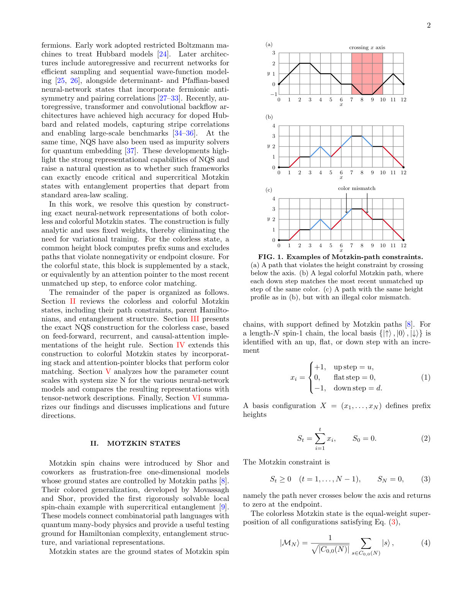
<figcaption class="paper-figure-caption"><b>Fig 1.</b> Low-resolution page preview, page 2</figcaption>
</figure>
<figure class="paper-figure-card">
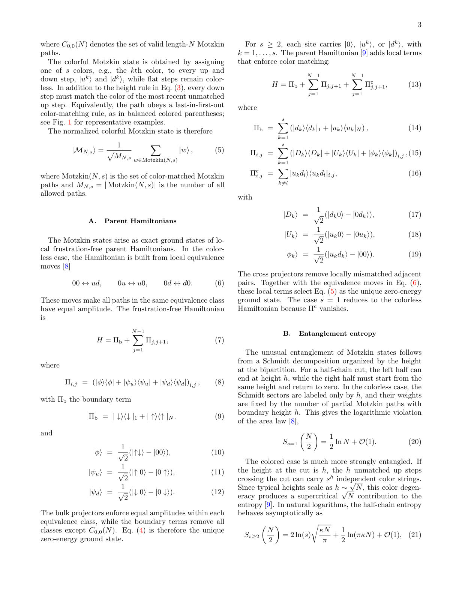
<figcaption class="paper-figure-caption"><b>Fig 2.</b> Low-resolution page preview, page 3</figcaption>
</figure>
<figure class="paper-figure-card">
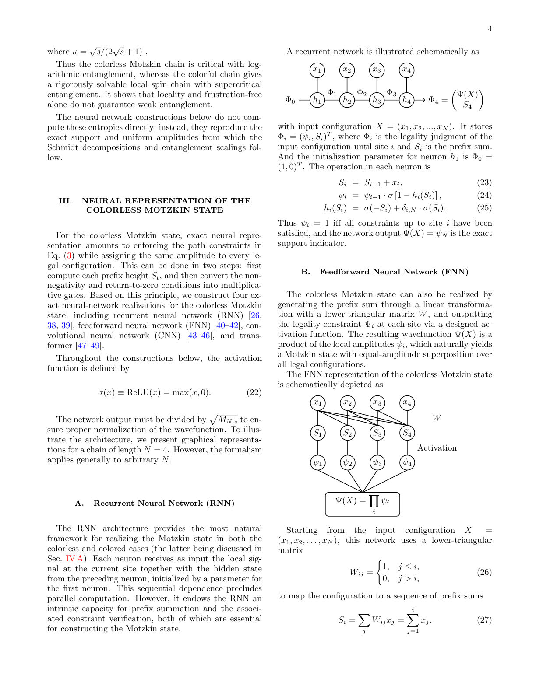
<figcaption class="paper-figure-caption"><b>Fig 3.</b> Low-resolution page preview, page 4</figcaption>
</figure>
<figure class="paper-figure-card">
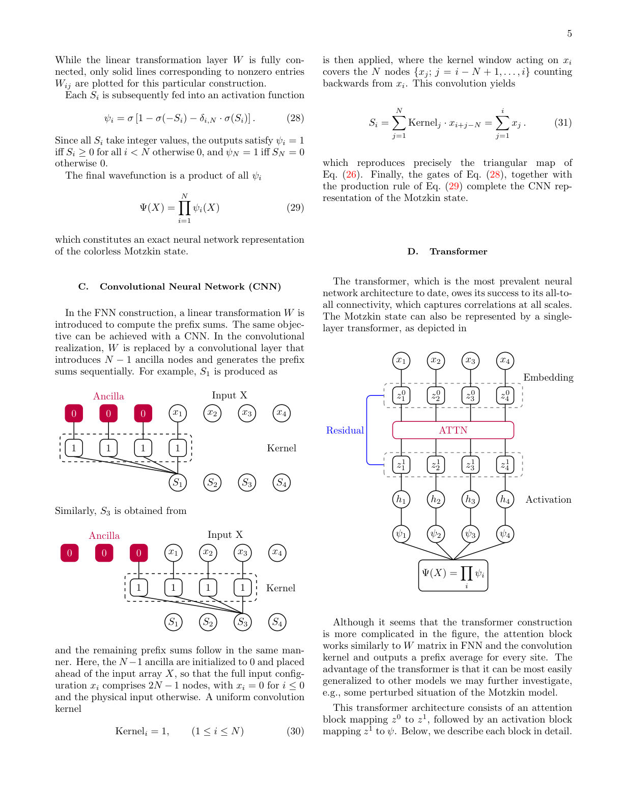
<figcaption class="paper-figure-caption"><b>Fig 4.</b> Low-resolution page preview, page 5</figcaption>
</figure>
<figure class="paper-figure-card">
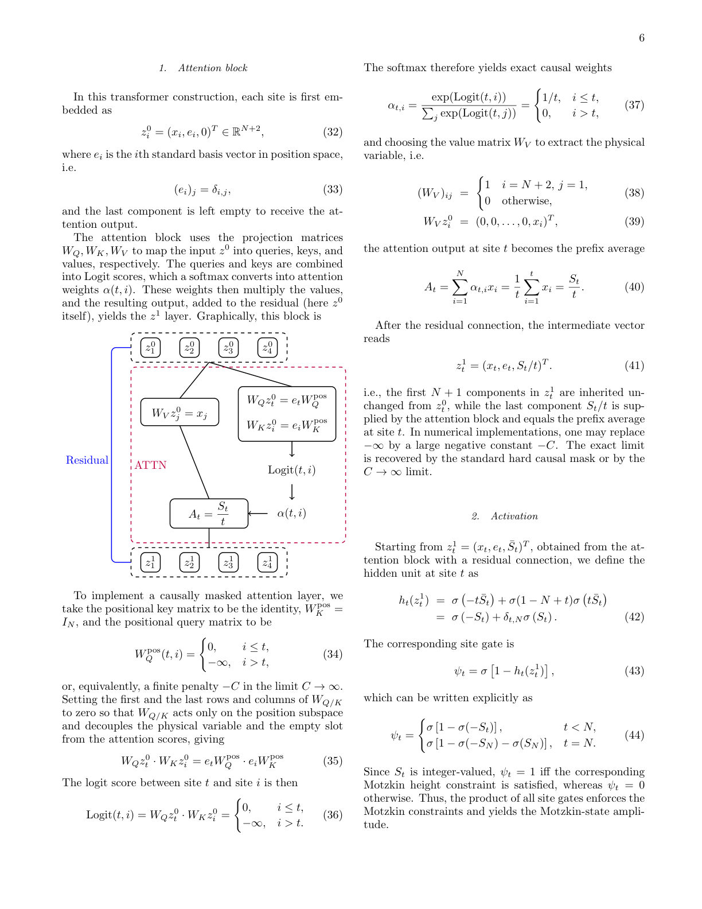
<figcaption class="paper-figure-caption"><b>Fig 5.</b> Low-resolution page preview, page 6</figcaption>
</figure>
</div>

<p><strong>Summary.</strong> This paper develops analytic, fixed-weight neural network representations for Motzkin spin chains, which are known to exhibit entanglement scaling beyond the area law. By adapting recurrent, convolutional, and transformer architectures, the authors prove that NNs can faithfully encode these complex combinatorial constraints. This establishes a general design principle for using neural networks as powerful tools to model strongly entangled quantum many-body systems.</p>
<p><strong>Why it may be interesting.</strong> This work provides a powerful, constructive framework showing that advanced NNs can encode quantum correlations beyond simple area-law scaling, offering new benchmarks for simulating strongly correlated systems where standard tensor networks fail.</p>
<details>
<summary>Detailed structure</summary>
<p><strong>Main problem.</strong> The core problem is constructing exact, training-free neural network representations for Motzkin states whose entanglement properties exceed those captured by standard Matrix Product States.</p>
<p><strong>Main result.</strong> The authors successfully demonstrated that multiple neural architectures (RNN, FNN, CNN, Transformer) can analytically encode the complex support of these highly entangled quantum states.</p>
<p><strong>Method.</strong> They systematically designed fixed-weight NQS layers incorporating causal prefix-sum modules and specialized gates to enforce combinatorial path constraints (height matching and color matching).</p>
<p><strong>Model / system.</strong> The system studied is the Motzkin spin chain, which includes colorless generalizations defined by height constraints and colorful versions requiring an additional last-in-first-out color-matching rule.</p>
<p><strong>Key observables.</strong> Entanglement entropy scaling ($\log N$ for colorless; $\sqrt{N}$ for colorful), and the ability to reproduce the exact support of the ground state wavefunction.</p>
<p><strong>Important parameters / regimes.</strong> System size $N$, and the specific architectural components (e.g., causal prefix-sum module, color stack).</p>
<p><strong>Assumptions / limitations.</strong> The representations are fixed-weight constructions based on the assumption that the state's support is governed by a finite causal algorithm.</p>
<p><strong>Figures summary.</strong> Figures illustrate Motzkin path constraints, including height violations and legal/illegal color matching paths for small system sizes ($N=4$).</p>
<p><strong>Paper structure.</strong> The paper first establishes the physical properties and entanglement scaling of Motzkin states based on their Hamiltonian. It then systematically details how four different neural network architectures (RNN, FNN, CNN, Transformer) can mathematically reproduce the exact support required by these path constraints.</p>
</details>
<details>
<summary>Abstract</summary>
<p>Motzkin spin chains are paradigmatic frustration-free one-dimensional quantum systems whose ground states feature exactly solvable combinatorial structures and exotic, area-law-violating entanglement scaling. Specifically, colorless Motzkin states exhibit critical logarithmic entanglement divergence \(\log N\) with system size \(N\), while their colorful counterparts host supercritical sublinear \(\sqrt{N}\) entanglement growth. Such unconventional entanglement behaviors place these states well beyond the expressive capability of standard matrix product states, which are fundamentally constrained by the entanglement area law. Here, we systematically construct exact, training-free neural-network representations for both colorless and colorful Motzkin states across four mainstream architectures, including recurrent, feedforward, convolutional, and transformer networks. Our core design leverages a causal prefix-sum module, implementable via recurrent updates, feedforward mappings, or masked attention layers, combined with position-selective rectified linear gates that enforce the Motzkin height constraints. For the colorful states, we further introduce a dedicated causal stack module that explicitly encodes the last-in-first-out color-matching rule. Our results demonstrate that neural architectures can accurately capture highly non-trivial entanglement features inaccessible to conventional tensor networks, providing prototypic examples for benchmarking and a constructive design framework for future neural-network quantum state developments targeting strongly entangled quantum systems.</p>
</details>
<p><sub><a href="#top">↑ back to top</a></sub></p>

<p><a id="paper-2607.22029"></a></p>
<h3 id="structural-stability-electronic-structure-and-magnetism-of-the-math229math-double-infinite-layer-lamath230mathnimath231mathomath232mathf-under-chemical-pressure-and-epitaxial-strain"><a href="http://arxiv.org/abs/2607.22029v1">Structural stability, electronic structure, and magnetism of the $d^9$ double infinite-layer La$_3$Ni$_2$O$_5$F under chemical pressure and epitaxial strain</a></h3>
<p><strong>Authors:</strong> K. Madani, Q. N. Meier, A. Cano<br>
<strong>Type:</strong> theory · <strong>Category:</strong> strongly correlated electrons · <strong>PDF:</strong> <a href="https://arxiv.org/pdf/2607.22029v1">https://arxiv.org/pdf/2607.22029v1</a><br>
<strong>Analysis basis:</strong> full PDF text, analyzed in chunks
<strong>Topic relevance:</strong> 🔥 <code>analog quantum simulation</code> <strong>4/5</strong> · <code>exotic spin models in light-matter</code> <strong>1/5</strong> · <code>non-equilibrium dynamics</code> <strong>1/5</strong></p>
<div class="figure-strip-hint">↔ Scroll figures horizontally</div>
<div class="paper-figures-scroll">
<figure class="paper-figure-card">
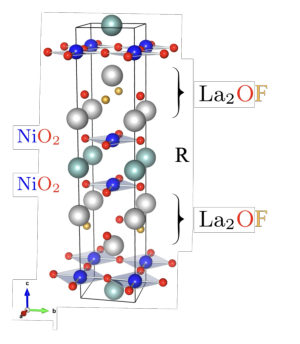
<figcaption class="paper-figure-caption"><b>Fig 1.</b> Figure 1. Ball-and-stick model of the double infinite-layer nickelate La2RNi2O5F. The system comprises a bilayer NiO2 block separated by fluorite-type La2OF spacers. Within this block, the two square-planar NiO2 layers are separated by rare-earth R elements. Lines indicate the conventional cell for the O/F ordering considered throughout.</figcaption>
</figure>
<figure class="paper-figure-card">
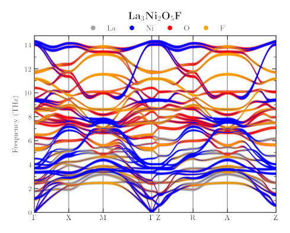
<figcaption class="paper-figure-caption"><b>Fig 2.</b> Figure 2. Calculated phonon spectrum of La3Ni2O5F. The colors indicate the main atoms involved in the corresponding modes.</figcaption>
</figure>
<figure class="paper-figure-card">
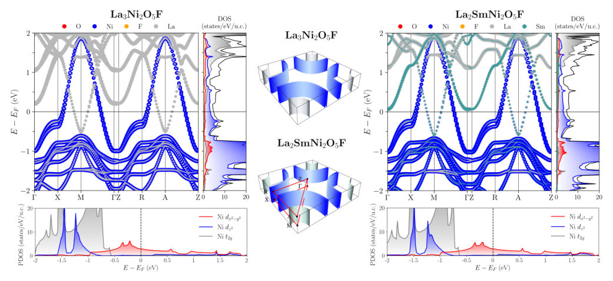
<figcaption class="paper-figure-caption"><b>Fig 3.</b> Figure 3. Calculated electronic structure of (left) La3Ni2O5F and (right) La2SmNi2O5F, with the corresponding k-path shown as an inset. Orbital-resolved density of states (DOS) and Fermi surfaces are shown alongside the bands.</figcaption>
</figure>
<figure class="paper-figure-card">
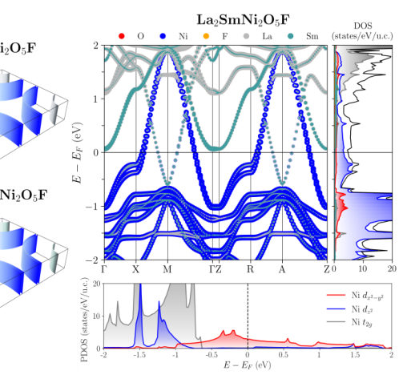
<figcaption class="paper-figure-caption"><b>Fig 4.</b> Figure 3 shows the calculated electronic structure of La2SmNi2O5F. Compared with La3Ni2O5F, the Ni- dx2−y2 bands and the O-2p manifold remain essentially unchanged, while the rare-earth-derived bands shift sub- tly downward. Specifically, the self-doping band sinks further below EF around M and A, and the empty rare- earth conduction band moves closer to EF along Γ-Z. Although the absolute position of these states might be sensitive to the 4f treatment of the rare-earth ions, their evolution with chemical pressure is robust, yielding a con- sistent trend across the rare-earth series (Fig. S3). Oth- erwise, despite the reduced NiO2 interlayer spacing, the resulting Fermi surface closely...</figcaption>
</figure>
<figure class="paper-figure-card">
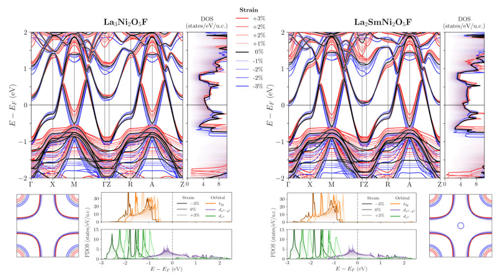
<figcaption class="paper-figure-caption"><b>Fig 5.</b> Figure 4. Electronic band structures, orbital-resolved Ni DOS, and Fermi surfaces calculated for La3Ni2O5F (left) and La2SmNi2O5F (right) as a function of epitaxial strain.</figcaption>
</figure>
</div>

<p><strong>Summary.</strong> This theoretical study examines $  ext{La}_3   ext{Ni}_2   ext{O}_5    ext{F}$ as a tunable cuprate analogue, using first-principles calculations to probe its electronic and magnetic properties. The research demonstrates that the material maintains a robust, two-dimensional Ni-$d_{x^2-y^2}$ Fermi surface even when subjected to chemical pressure or epitaxial strain. Ultimately, it establishes lattice engineering as a powerful tool for controlling correlated electron behavior in nickelates.</p>
<p><strong>Why it may be interesting.</strong> The ability to use lattice engineering (strain/pressure) to continuously control correlated parameters like doping and magnetic interactions in a solid-state system is highly relevant for understanding emergent quantum phases in strongly correlated materials.</p>
<details>
<summary>Detailed structure</summary>
<p><strong>Main problem.</strong> The study investigates how structural stability, electronic structure, and magnetism of the double infinite-layer oxyfluoride $   ext{La}_3   ext{Ni}_2   ext{O}_5    ext{F}$ are influenced by external tuning parameters like chemical pressure and epitaxial strain.</p>
<p><strong>Main result.</strong> The material is identified as a promising cuprate analogue because its electronic structure remains robustly two-dimensional, while lattice engineering allows for continuous fine-tuning of carrier doping and magnetic frustration.</p>
<p><strong>Method.</strong> First-principles calculations using DFT (PBE functional) are employed to calculate phonon spectra, band structures, Fermi surfaces, and magnetic ground states under varying strain and chemical substitutions.</p>
<p><strong>Model / system.</strong> The system is the double infinite-layer nickelate $ ext{La}_3   ext{Ni}_2   ext{O}_5    ext{F}$, which is modeled as a correlated electron material exhibiting strong electronic correlations in the Ni $d$-orbitals, analogous to high-Tc cuprates.</p>
<p><strong>Key observables.</strong> Phonon spectrum (stability), Fermi surface character ($    ext{Ni-}d_{x^2-y^2}$ dominance), self-doping level, and magnetic ground state energy/frustration.</p>
<p><strong>Important parameters / regimes.</strong> Epitaxial strain ($\epsilon$), chemical pressure (rare-earth substitution $    ext{La}     o   ext{Sm}$), and the charge-transfer energy ($\Delta$).</p>
<p><strong>Assumptions / limitations.</strong> The calculations rely on DFT approximations, treating the system as a solid-state material where electronic correlations are captured via orbital analysis and magnetic modeling.</p>
<p><strong>Figures summary.</strong> Figures illustrate the phonon spectrum confirming stability under strain, band structures showing 2D cuprate-like features across substitutions, and energy comparisons detailing competing magnetic ground states.</p>
<p><strong>Paper structure.</strong> The paper first establishes the structural and electronic baseline of $    ext{La}_3   ext{Ni}_2   ext{O}_5    ext{F}$. It then systematically explores how chemical pressure (substitution) and epitaxial strain modify the robust 2D electronic structure and tune the magnetic frustration landscape.</p>
</details>
<details>
<summary>Abstract</summary>
<p>Nickelate materials exhibit rich electronic properties that can be engineered toward cuprate-like regimes through topotactic and mixed-anion chemistry. Using first-principles calculations, we investigate the newly synthesized double infinite-layer oxyfluoride La$_3$Ni$_2$O$_5$F and its evolution under chemical pressure and epitaxial strain. The calculated phonon spectrum confirms the dynamical stability of the reported double infinite-layer crystal structure. Further, we find a highly two-dimensional cuprate-like Fermi surface dominated by Ni-$d_{x^2-y^2}$ states, with a moderate rare-earth-derived self-doping yielding an effective $\sim d^{1.2}_{x^2-y^2}$ filling. These electronic features remain remarkably robust under both chemical pressure and epitaxial strain. Spin-polarized calculations further reveal an extended manifold of nearly degenerate magnetic configurations with different in-plane and out-of-plane spin arrangements. Compressive strain further enhances this magnetic frustration while leaving the underlying electronic structure largely unchanged. Our results thus identify La$_3$Ni$_2$O$_5$F as a promising cuprate analogue and establish lattice engineering as an effective strategy for fine tuning its electronic and magnetic properties.</p>
</details>
<p><sub><a href="#top">↑ back to top</a></sub></p>

<p><a id="paper-2607.22294"></a></p>
<h3 id="substrate-metal-interface-engineering-enhances-tanta-thin-film-superconducting-resonator-performance"><a href="http://arxiv.org/abs/2607.22294v1">Substrate-metal interface engineering enhances TaN/Ta thin film superconducting resonator performance</a></h3>
<p><strong>Authors:</strong> Moritz Singer, Harsh Gupta, Benedikt Schoof, Elena Willinger, Anton Orekhov, Alexandra Schewski, Samuil Kostadinov, Philip Constantin Schneider, Marc Tornow<br>
<strong>Type:</strong> experiment · <strong>Category:</strong> quantum information and computing · <strong>PDF:</strong> <a href="https://arxiv.org/pdf/2607.22294v1">https://arxiv.org/pdf/2607.22294v1</a><br>
<strong>Analysis basis:</strong> full PDF text, analyzed in chunks
<strong>Topic relevance:</strong> 🔥 <code>QC/QI experiment</code> <strong>4/5</strong> · <code>correlated / nonlocal dissipation</code> <strong>1/5</strong></p>
<div class="figure-strip-hint">↔ Scroll figures horizontally</div>
<div class="paper-figures-scroll">
<figure class="paper-figure-card">
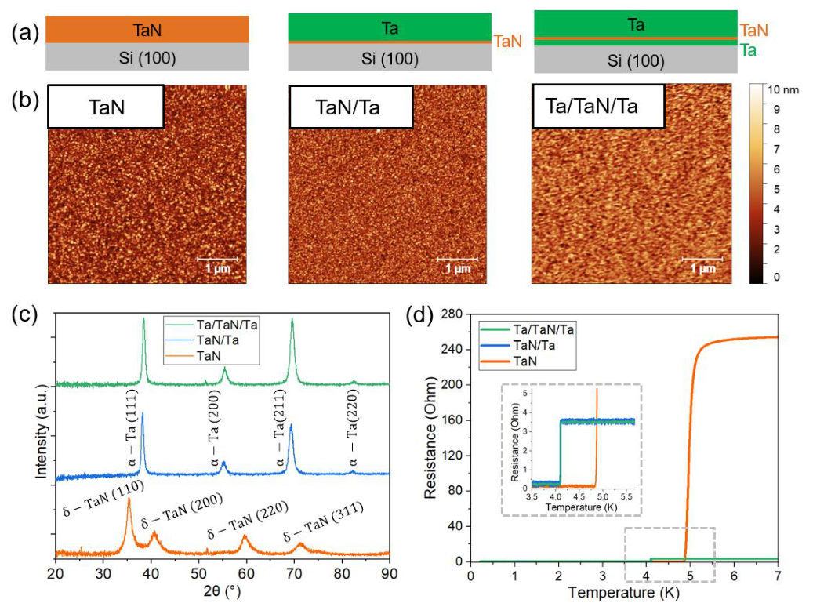
<figcaption class="paper-figure-caption"><b>Fig 1.</b> Figure 1: (a) Schematic sketches of the sputtered material stacks: 200 nm thick of TaN, as well as 5 nm TaN followed by 200 nm of Ta and 10 nm of Ta, followed by 5 nm of TaN and 200 nm of Ta were deposited on Si (100) substrates. (b) AFM pictures of the three deposited thin film stack surfaces. The surface roughness is in the range of 0.4-0.9 nm for all three films. (c) GI-XRD spectra of the thin films, showing exclusively alpha-peaks in Ta/TaN and Ta/TaN/Ta. The TaN spectrum shows peak associated with cubic delta-TaN. (d) Critical temperature measurements, where a superconducting transition was observed for all stacks. Ta on TaN and on TaN/Ta turns superconducting at ~4.1 K, while the TaN...</figcaption>
</figure>
<figure class="paper-figure-card">
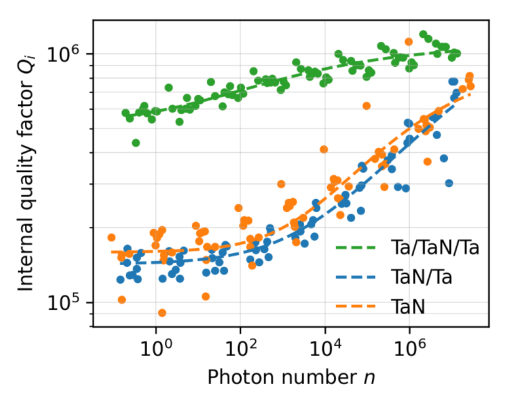
<figcaption class="paper-figure-caption"><b>Fig 2.</b> Figure 2: Internal quality factors of thin film CPW resonators measured at 100 mK, as function of the mean photon number n. In the single-photon regime, TaN and Ta on TaN have similar Qi of QiTaN = 1.53×105 and QiTaN/Ta = 1.41×105. In contrast, the stack with the added 10 nm Ta has a significantly higher QiTa/TaN/Ta = 5.88×105. In the high-power regime, the Ta/TaN/Ta stack still has higher Qi, but the difference to the other thin films is much smaller than in the single-photon regime. Circle symbols: measured data points.. Dashed lines: numerical fits to eq. 1.</figcaption>
</figure>
<figure class="paper-figure-card">
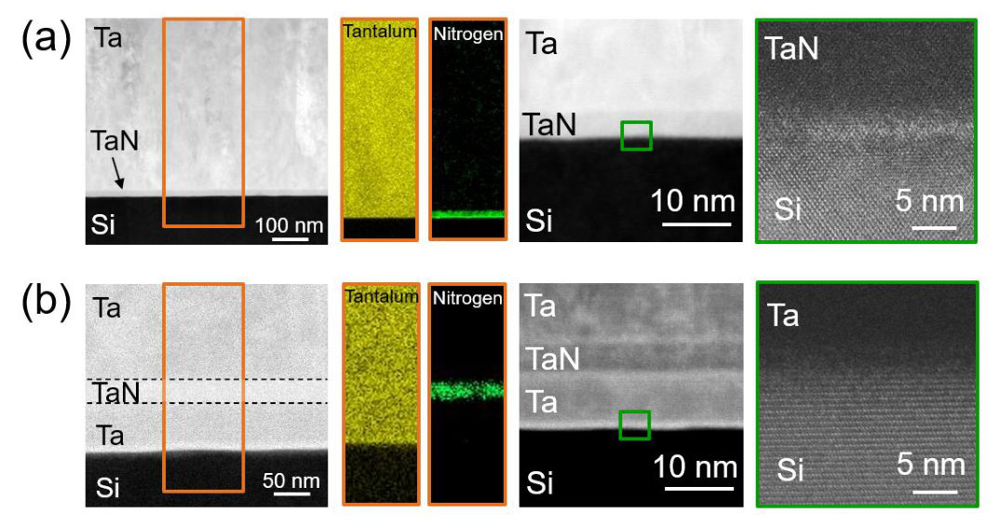
<figcaption class="paper-figure-caption"><b>Fig 3.</b> Figure 3: (a) TEM pictures and EELS analysis of the TaN/Ta stack, confirming the expected layer stack of Ta on 5 nm of TaN on Si. In the high-resolution TEM images in the right, irregular lighter and darker regions next to the interface can be seen, indicating dislocations and disorder in the Si lattice. (b) TEM and EELS analysis for the Ta/TaN/Ta stack, where again Ta is deposited on 5 nm of TaN, but a 10 nm thick Ta buffer layer between TaN and Si is introduced. For this stack, no structural disorder or defects in the Si lattice are visible and the interface to the Si looks undistorted.</figcaption>
</figure>
</div>

<p><strong>Summary.</strong> The research investigates how modifying the interface between tantalum nitride ($  ext{TaN}$) thin films and their silicon substrate affects superconducting resonator performance. By introducing a thin Ta buffer layer, the authors significantly boost the internal quality factor ($Q_i$) from $\sim 1.5 	imes 10^5$ to $5.9 	imes 10^5$. This improvement is attributed to suppressing structural disorder and minimizing energy loss mechanisms concentrated at the metal-substrate interface.</p>
<p><strong>Why it may be interesting.</strong> This work directly addresses material science limitations in superconducting quantum hardware, providing actionable engineering guidelines for improving coherence times and resonator quality factors in solid-state qubits.</p>
<details>
<summary>Detailed structure</summary>
<p><strong>Main problem.</strong> The primary goal is enhancing the performance of superconducting resonators used in qubit circuits by engineering the interface between the deposited metal films and the substrate.</p>
<p><strong>Main result.</strong> Introducing a thin Ta buffer layer significantly enhances the internal quality factor ($Q_i$) of the resonator, showing that controlling this substrate-metal interface is crucial for minimizing energy loss mechanisms like Two-Level Systems (TLS).</p>
<p><strong>Method.</strong> The study uses superconducting microwave resonators patterned on Si substrates and measures their $Q_i$ using VNA measurements. Structural analysis via TEM/EELS confirms the physical origin of performance changes.</p>
<p><strong>Model / system.</strong> The platform is a superconducting circuit utilizing TaN/Ta thin films deposited on silicon, tested at cryogenic temperatures (100 mK). The loss mechanism is modeled using the Two-Level System (TLS) theory to quantify interface-related energy dissipation.</p>
<p><strong>Key observables.</strong> Internal quality factor ($Q_i$), critical temperature ($T_c$), structural disorder observed via TEM/EELS, and TLS loss parameters ($Q_{TLS,0}$).</p>
<p><strong>Important parameters / regimes.</strong> Film thicknesses (few nm scale), operating temperature ($\sim 100$ mK), and the presence/absence of a Ta buffer layer.</p>
<p><strong>Assumptions / limitations.</strong> The performance degradation is dominated by interface-related TLS losses, and that modifying this interface directly mitigates these losses.</p>
<p><strong>Figures summary.</strong> Figures schematically illustrate the three investigated film stacks ($ ext{TaN}$ only, $   ext{TaN}/   ext{Ta}$, $ ext{Ta}/    ext{TaN}/   ext{Ta}$) and show TEM/EELS evidence contrasting structural disorder at the direct $    ext{TaN-Si}$ interface versus the clean interface achieved with the Ta buffer layer.</p>
<p><strong>Paper structure.</strong> The paper progresses by first establishing baseline performance ($ ext{TaN}$ only), then comparing it to structures with different interfaces, and finally using advanced characterization (TEM/EELS) to correlate observed structural disorder at the $   ext{TaN-Si}$ interface with the measured reduction in $Q_i$ when a Ta buffer is added.</p>
</details>
<details>
<summary>Abstract</summary>
<p>Tantalum has been demonstrated as a promising material for superconducting qubits. However, comparatively little attention has been given to its nitrides. Tantalum nitride exhibits a range of stoichiometries, resulting in a variety of material properties, including both superconducting and non-superconducting phases. Owing to this versatility, tantalum nitrides can serve multiple purposes in superconducting qubits: as seed layers for alpha-Ta growth, as a superconducting base material and as a non-superconducting barrier in the Josephson junction. In this study, we explore the performance of superconducting TaN and Ta thin film combinations on silicon substrates in terms of internal quality factor Qi. We find that standalone TaN films exhibit Qi values of about 1.5x10^5 at 100mK in the single-photon regime. Surprisingly, a resonator made from Ta grown on a few-nanometers-thick TaN seed layer yields largely the same performance. However, adding an additional, few-nanometers-thick Ta buffer layer between the Si substrate and this TaN seed layer enhances Qi significantly up to 5.9x10^5. Supporting transmission electron microscopy measurements reveal nitrogen accumulation and structural disorder at the TaN-Si interface, while this interfacial modification is suppressed when the Ta buffer layer is introduced. The observed improvement in resonator performance is consistent with a reduction of interface-related two-level system losses and strongly supports the hypothesis that controlling the substrate-metal interface is pivotal for the performance of superconducting qubit circuitry.</p>
</details>
<p><sub><a href="#top">↑ back to top</a></sub></p>

<p><a id="paper-2607.22265"></a></p>
<h3 id="low-loss-superconducting-resonators-enabled-by-aluminum-microstructural-engineering-and-dielectric-trimming"><a href="http://arxiv.org/abs/2607.22265v1">Low loss superconducting resonators enabled by aluminum microstructural engineering and dielectric trimming</a></h3>
<p><strong>Authors:</strong> Mahmoud Almansouri, Umar T. F. Alhuwaymel, Ibraheem AlYousef, Albaraa Shafi, Abdullah Albogime, Igor Getmanov, Ahmed Hajr, Atif Shamim<br>
<strong>Type:</strong> experiment · <strong>Category:</strong> quantum information and computing · <strong>PDF:</strong> <a href="https://arxiv.org/pdf/2607.22265v1">https://arxiv.org/pdf/2607.22265v1</a><br>
<strong>Analysis basis:</strong> full PDF text, analyzed in chunks
<strong>Topic relevance:</strong> 🔥 <code>QC/QI experiment</code> <strong>4/5</strong></p>
<div class="figure-strip-hint">↔ Scroll figures horizontally</div>
<div class="paper-figures-scroll">
<figure class="paper-figure-card">
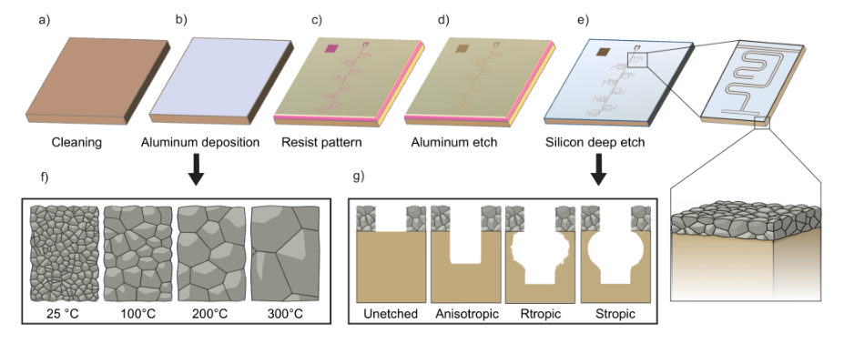
<figcaption class="paper-figure-caption"><b>Fig 1.</b> Figure 1: Fabrication process for the resonators, combining microstructural engineering and dielectric trimming. (a) A high-resistivity silicon wafer is cleaned and stripped of native oxide [using buffered oxide etch (BOE 7:1) / in dilute HF]. (b) High-purity aluminum is deposited at different substrate temperatures to engineer the film microstructure, with the inset (f) showing the conditions used: RT, 100 ◦C, 200 ◦C, and 300 ◦C. (c) The circuitry is defined by photolithography. (d) The aluminum is dry-etched using a Cl2/BCl3 reactive-ion etch (RIE). (e) The exposed silicon is deep-etched by RIE using CHF3 or a combination of SF6 and CHF3, producing the different edge profiles shown in...</figcaption>
</figure>
<figure class="paper-figure-card">
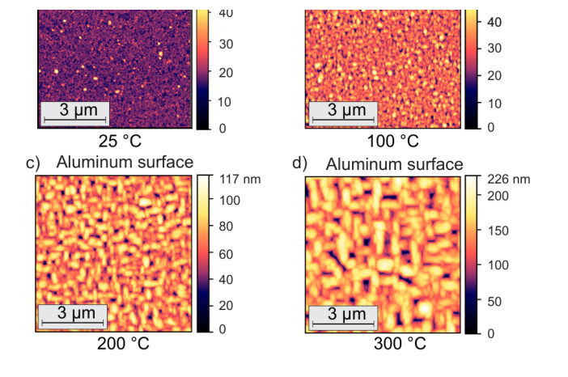
<figcaption class="paper-figure-caption"><b>Fig 2.</b> Figure 2: Microstructural engineering of the aluminum grains. Atomic force microscopy (AFM) images showing the evolution of the aluminum grain morphology with increasing substrate temperature: (a) room temperature (RT), (b) 100 ◦C, (c) 200 ◦C, and (d) 300 ◦C.</figcaption>
</figure>
<figure class="paper-figure-card">
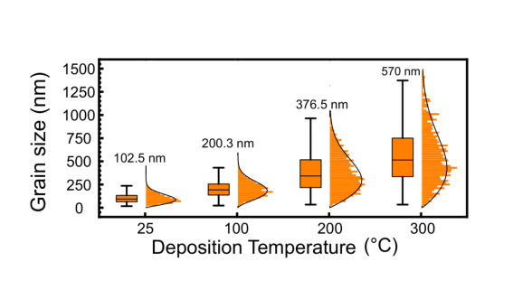
<figcaption class="paper-figure-caption"><b>Fig 3.</b> Figure 3: Grain size distribution for the four deposition temperatures; the value above each distribution gives the average grain size.</figcaption>
</figure>
<figure class="paper-figure-card">
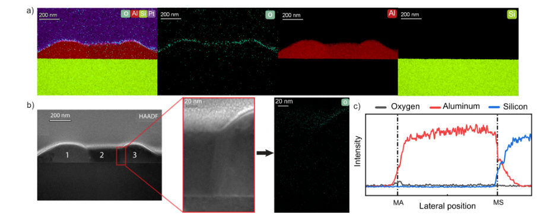
<figcaption class="paper-figure-caption"><b>Fig 4.</b> Figure 4: Cross-sectional STEM analysis of the 300 ◦C large-grain aluminum film on silicon. (a) False- colored energy-dispersive X-ray spectroscopy (EDS) maps showing the Al, O, Si, and Pt distributions across the sample cross-section; the Pt layer is deposited during sample preparation. (b) High-angle annular dark-field (HAADF) image of three aluminum grains (labeled 1, 2, 3), with the inset showing a zoomed-in HAADF image at the grain boundary overlaid with the oxygen EDS map. (c) Elemental distribution along the cross-section, with vertical lines marking the MA and MS interfaces.</figcaption>
</figure>
<figure class="paper-figure-card">
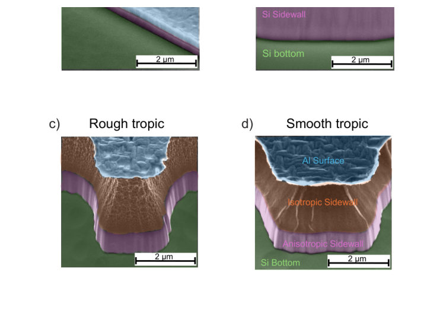
<figcaption class="paper-figure-caption"><b>Fig 5.</b> Figure 5: Dielectric trimming of the coplanar waveguide edge. False-colored scanning electron microscopy (SEM) images of the silicon edge profile for edges fabricated with (a) aluminum etching only, (b) anisotropic deep etching with CHF3 following the aluminum etch, (c) the rough-sidewall Tropic etch (with 60 mTorr pressure during SF6 etch followed by CHF3; ‘Rtropic’), and (d) the smooth-sidewall Tropic etch (with 5 mTorr pressure during SF6 etch followed by CHF3; ‘Stropic’).</figcaption>
</figure>
</div>

<p><strong>Summary.</strong> The paper tackles the fundamental challenge of material losses limiting qubit performance in superconducting resonators. The authors propose a two-pronged solution: engineering aluminum grain size to reduce non-TLS loss and using advanced etching techniques to smooth dielectric interfaces and minimize TLS loss. This combined approach results in a significant, measurable enhancement in resonator quality factor.</p>
<p><strong>Why it may be interesting.</strong> This work directly addresses hardware limitations in superconducting quantum circuits by providing actionable, materials-science based fabrication protocols to boost coherence times, which is critical for scaling up quantum processors.</p>
<details>
<summary>Detailed structure</summary>
<p><strong>Main problem.</strong> Material losses, stemming from Two-Level Systems (TLS) and non-TLS sources, fundamentally limit qubit coherence times and resonator quality factors in superconducting circuits.</p>
<p><strong>Main result.</strong> By combining aluminum microstructural engineering (increasing grain size) with dielectric trimming (smoothing the silicon edge), the authors achieved a two-orders-of-magnitude improvement in the resonator quality factor ($Q$), reaching $2.3 	imes 10^6$.</p>
<p><strong>Method.</strong> The study employed advanced nanofabrication techniques, including controlled aluminum deposition temperatures and specialized multi-step etching (Tropic etch), followed by cryogenic characterization.</p>
<p><strong>Model / system.</strong> The physical system is a superconducting coplanar waveguide (CPW) resonator fabricated on high-resistivity silicon using aluminum films. The loss mechanism is modeled as the sum of TLS losses (related to surface disorder) and non-TLS losses (related to metal microstructure).</p>
<p><strong>Key observables.</strong> Resonator quality factor ($Q$), which was measured at cryogenic temperatures; Atomic Force Microscopy (AFM) roughness measurements ($  ext{R}_t$); Grain size distribution.</p>
<p><strong>Important parameters / regimes.</strong> Deposition temperature of aluminum film ($25^\circ	ext{C}$ to $300^\circ	ext{C}$); Etching profiles (e.g., Tropic etch); Quality factor improvement factor ($\sim 40$).</p>
<p><strong>Assumptions / limitations.</strong> The improvements in microstructure and edge profiling are assumed to be generalizable enhancements for other superconducting quantum devices.</p>
<p><strong>Figures summary.</strong> Figures illustrate the full fabrication process combining both engineering steps; AFM images show grain size evolution with temperature; SEM/AFM compare silicon edge profiles from different etching methods; $Q$ factor plots demonstrate the combined enhancement effect.</p>
<p><strong>Paper structure.</strong> The paper systematically identifies material loss sources (TLS vs. non-TLS), proposes two complementary mitigation strategies—microstructural control via heating and surface smoothing via specialized etching—and presents quantitative evidence showing that combining both yields superior resonator performance.</p>
</details>
<details>
<summary>Abstract</summary>
<p>Material losses in superconducting circuits fundamentally limit qubit coherence times and resonator quality factors. Most research efforts focus on mitigating losses at circuit interfaces, including metal--substrate, substrate--air, and metal--air interfaces. However, the correlation between TLS and non-TLS losses with the intrinsic properties of the superconducting metal and the dielectric edge smoothness is not well studied. In this work, we link the aluminum film grain size to non-TLS losses and the dielectric trimming profile and roughness to TLS loss; both loss mechanisms are subsequently mitigated. To reduce metal-related losses, we engineer the aluminum microstructure by heating during deposition, increasing grain size and reducing grain boundary density. Beyond mitigating metal losses, we introduce a two-step etching technique, Tropic etching, to suppress dielectric TLS loss by producing an ultra-smooth silicon surface with minimal defects and redeposition. These results lay out the fabrication pathway for aluminum resonators with lower loss, demonstrating two-orders-of-magnitude improvement in quality factor from $6\times10^{4}$ to $2.3\times10^{6}$. Since aluminum is the basis for most high-coherence Josephson junctions and dielectric edges are inherent to all common device geometries, the improvements in aluminum microstructure and edge profiling, presented here, can enhance the performance of superconducting quantum devices.</p>
</details>
<p><sub><a href="#top">↑ back to top</a></sub></p>

<p><a id="paper-2607.21764"></a></p>
<h3 id="tunable-nonlinear-electromechanics-at-the-zero-point-motion-scale"><a href="http://arxiv.org/abs/2607.21764v1">Tunable nonlinear electromechanics at the zero-point motion scale</a></h3>
<p><strong>Authors:</strong> Christoffer B. Møller, Roger Tormo-Queralt, Elsa Vázquez-Rodríguez, Victor Román-Rodríguez, Marta Cagetti, Eneko Mateos-Madinabeitia, Janine C. Franz, Stefan Forstner, Sergio L. De Bonis, Luca Ornago, Maria El Abbassi, Seoho Jung, Andrew N. Cleland, David A. Czaplewski, Fabio Pistolesi, Adrian Bachtold<br>
<strong>Type:</strong> both · <strong>Category:</strong> other · <strong>PDF:</strong> <a href="https://arxiv.org/pdf/2607.21764v1">https://arxiv.org/pdf/2607.21764v1</a><br>
<strong>Analysis basis:</strong> full PDF text, analyzed in chunks
<strong>Topic relevance:</strong> <code>analog quantum simulation</code> <strong>3/5</strong> · <code>correlated cavity matter</code> <strong>3/5</strong> · <code>driven-dissipative phase transition</code> <strong>3/5</strong> · <code>Tavis-Cummings &amp; cavity-many-emitter</code> <strong>2/5</strong> · <code>methods for driven-dissipative</code> <strong>2/5</strong> · <code>non-equilibrium dynamics</code> <strong>2/5</strong> · <code>quantum optics experiment</code> <strong>2/5</strong> · <code>spintronics-quantum-optics interface</code> <strong>2/5</strong> · <code>Keldysh / 2PI / non-Gaussian methods</code> <strong>1/5</strong> · <code>correlated / nonlocal dissipation</code> <strong>1/5</strong> · <code>entanglement &amp; information structure</code> <strong>1/5</strong> · <code>exotic spin models in light-matter</code> <strong>1/5</strong> · <code>measurement-induced transitions</code> <strong>1/5</strong> · <code>non-equilibrium universality</code> <strong>1/5</strong> · <code>quantum measurements</code> <strong>1/5</strong></p>
<div class="figure-strip-hint">↔ Scroll figures horizontally</div>
<div class="paper-figures-scroll">
<figure class="paper-figure-card">
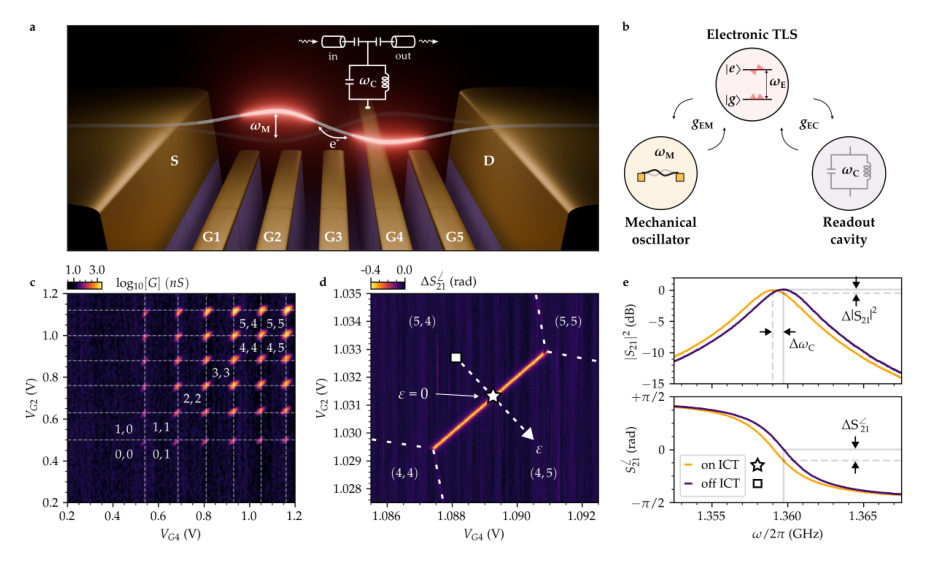
<figcaption class="paper-figure-caption"><b>Fig 1.</b> Figure 1: Hybrid system overview. a. Simplified representation of a double-quantum dot (red) embedded in a vibrating carbon nanotube suspended above five gate electrodes G1-G5, one of which is galvanically connected to a superconducting microwave resonator used for cavity readout. b. Schematic of the tri-partite hybrid system comprising a mechanical oscillator, an electronic two-level system (ETLS), and superconducting microwave cavity. c. Charge stability diagram showing the double-quantum dot electron configuration controlled by the gate voltages 𝑉G2 and 𝑉G4, and measured via the electrical conductance 𝐺at 10 K with an applied source-drain bias 𝑉SD = 3 mV. We continuously compensate gate...</figcaption>
</figure>
<figure class="paper-figure-card">
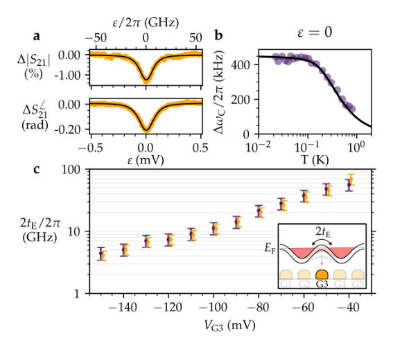
<figcaption class="paper-figure-caption"><b>Fig 2.</b> Figure 2: Highly tunable electronic two-level system. a. Magnitude and phase shift of the cavity transmission as a function of the ETLS detuning 𝜀measured at base temperature with𝑉G3 = −100 mV. b. ETLS induced cavity frequency shift as a function of temperature measured at 𝜀= 0 and𝑉G3 = −100 mV. c. ETLS frequency at 𝜀= 0 as a function of the control gate voltage 𝑉G3. The ETLS frequency is quantified from the two independent measurement methods shown in (a) and (b). The inset is a schematic of the gated nanotube electrostatic potential, relative to the Fermi energy 𝐸F, with the two quantum dots (red) formed by three tunnel barriers enabled by the nanotube bandgap. The tunnel coupling 2𝑡E is...</figcaption>
</figure>
<figure class="paper-figure-card">

<figcaption class="paper-figure-caption"><b>Fig 3.</b> Figure 3: Nonlinearity in both the mechanical motion and its readout. a. Mechanical spectra for different drives at 𝜀= 0 measured by two-tone spectroscopy with an AM (purple) and CW (orange) homodyne detection scheme. Solid horizontal line is given by the maximum cavity frequency shift Δ𝜔C. Inset shows the mechanical frequency 𝜔M suppression as a function of detuning. Dashed white line shows theoretical prediction of the suppression without any Kerr contribution. b. Dependence of Δ𝜔C on calibrated displacement in units of the zero-point motion. The measured Δ𝜔C depends quadratically on the detuning drive (dashed line) consistent with a 𝑥2-readout. The scaling persists until 2𝑔EM𝑥/𝑥zpf ≃2𝑡E...</figcaption>
</figure>
<figure class="paper-figure-card">

<figcaption class="paper-figure-caption"><b>Fig 4.</b> Figure 4: Highly tunable hybrid system. a-c. Mechanical frequency, Kerr nonlinearity, and linewidth of the mechanical resonance measured at 𝜀= 0 as a function of the ETLS tunnel coupling 2𝑡E for two different electromechanical couplings reached at two ICT electron configurations. Solid lines are theory predictions in (a) &amp; (b), and fit to a 1/(2𝑡E)3 dependence in (c). d. Two-tone spectroscopy of the upper and lower optomechanical sidebands as a function of ETLS detuning at a fixed detuning drive amplitude. The shift of the measured sideband frequencies 𝜔C ± 𝜔M are consistent with the measured 𝜀dependence of 𝜔M. e. Observed cavity frequency shift as a function of the ETLS detuning as well as...</figcaption>
</figure>
</div>

<p><strong>Summary.</strong> The paper reports on an experimental realization of tunable nonlinear electromechanics using a coupled nanotube oscillator and double quantum dots. By operating in the ultrastrong coupling regime, they achieve significant mechanical anharmonicity ($\alpha=1.4\%$) and demonstrate purely quadratic readout sensitivity near zero-point motion. This establishes a versatile platform for fundamental studies in nanoscale quantum control.</p>
<p><strong>Why it may be interesting.</strong> This work directly bridges quantum optics (cavity QED), nanomechanics, and solid-state physics, providing a highly tunable platform for observing nonlinear dynamics near the quantum ground state, which is central to modern AMO research.</p>
<details>
<summary>Detailed structure</summary>
<p><strong>Main problem.</strong> The primary challenge addressed is achieving tunable nonlinear electromechanics at the zero-point motion scale for nanomechanical systems.</p>
<p><strong>Main result.</strong> The authors demonstrate a platform exhibiting a mechanical Kerr nonlinearity ($\alpha=1.4\%$) and purely quadratic continuous readout, both controllable via ultrastrong coupling (USC).</p>
<p><strong>Method.</strong> Theoretical modeling using Hamiltonian approaches combined with experimental measurements of frequency shifts and linewidths.</p>
<p><strong>Model / system.</strong> The system is a hybrid setup involving a carbon nanotube mechanical oscillator coupled to an electronic two-level system (ETLS) formed by quantum dots, all integrated within a microwave cavity.</p>
<p><strong>Key observables.</strong> Mechanical Kerr nonlinearity ($\alpha$), purely quadratic readout signal ($\Delta\omega_C \propto x^2$), and the thermal linewidth ($\langle \delta\omega_M^2 
angle$).</p>
<p><strong>Important parameters / regimes.</strong> Ultrastrong coupling (USC) regime, zero-point motion scale, gate tunability of ETLS parameters ($t_E$, $\epsilon$), and mechanical frequency ($\omega_M$).</p>
<p><strong>Assumptions / limitations.</strong> The analysis relies on the dispersive ultrastrong-coupling regime where low-lying eigenstates remain predominantly mechanical.</p>
<p><strong>Figures summary.</strong> Figures illustrate system setups, quantum dot control mechanisms, measurements confirming quadratic readout scaling, and spectral density plots comparing analytical thermal linewidth estimates with numerical diagonalization results.</p>
<p><strong>Paper structure.</strong> The paper progresses from establishing the physical platform and Hamiltonian to demonstrating strong nonlinearity via Kerr effects, followed by characterizing the purely quadratic continuous readout mechanism, and finally analyzing thermal broadening using advanced spectral density calculations.</p>
</details>
<details>
<summary>Abstract</summary>
<p>Nonlinearity at the scale of zero-point motion opens new possibilities for the control and readout of nanomechanical systems, but achieving this remains a formidable challenge. Here we demonstrate that ultrastrong coupling (USC) between a nanotube mechanical oscillator and a double-quantum-dot electronic two-level system enables a mechanical Kerr (Duffing) nonlinearity at the zero-point motion scale. In the dispersive regime, this large coupling yields a mechanical anharmonicity of $α= 1.4\%$ - three orders of magnitude larger than in previous work - while preserving the predominantly mechanical nature of the lowest energy states. We further demonstrate a purely quadratic cavity-based continuous readout of the mechanical motion. This continuous nonlinear optomechanical readout is enforced by a double-quantum dot symmetry, which can be broken by gate tuning to introduce a large linear transduction. These results establish a tunable USC platform that enables strong mechanical anharmonicity and nonlinear continuous readout at the zero-point motion scale.</p>
</details>
<p><sub><a href="#top">↑ back to top</a></sub></p>

<p><a id="paper-2607.22056"></a></p>
<h3 id="optical-time-travel-proposal-for-testing-hawkings-chronology-protection-conjecture-in-an-optical-analogue"><a href="http://arxiv.org/abs/2607.22056v1">Optical time travel: proposal for testing Hawking's Chronology Protection Conjecture in an optical analogue</a></h3>
<p><strong>Authors:</strong> D. Bermudez, U. Leonhardt<br>
<strong>Type:</strong> both · <strong>Category:</strong> other · <strong>PDF:</strong> <a href="https://arxiv.org/pdf/2607.22056v1">https://arxiv.org/pdf/2607.22056v1</a><br>
<strong>Analysis basis:</strong> full PDF text, analyzed in chunks
<strong>Topic relevance:</strong> <code>Keldysh / 2PI / non-Gaussian methods</code> <strong>3/5</strong> · <code>analog quantum simulation</code> <strong>3/5</strong> · <code>correlated / nonlocal dissipation</code> <strong>3/5</strong> · <code>driven-dissipative phase transition</code> <strong>3/5</strong> · <code>methods for driven-dissipative</code> <strong>3/5</strong> · <code>non-equilibrium dynamics</code> <strong>2/5</strong> · <code>non-equilibrium universality</code> <strong>2/5</strong> · <code>quantum optics experiment</code> <strong>2/5</strong> · <code>entanglement &amp; information structure</code> <strong>1/5</strong> · <code>interference shaping light</code> <strong>1/5</strong> · <code>measurement-induced transitions</code> <strong>1/5</strong> · <code>quantum measurements</code> <strong>1/5</strong></p>
<div class="figure-strip-hint">↔ Scroll figures horizontally</div>
<div class="paper-figures-scroll">
<figure class="paper-figure-card">

<figcaption class="paper-figure-caption"><b>Fig 1.</b> Figure 1: Time travel. a: Spacetime diagram of a time traveler. The particles of the traveler move at uniform velocity (black lines). When starting the “time machine” (an event marked by the upper dot) the traveler meets a precise copy of himself made of antiparticles and gets annihilated. The antiparticles (red) are made in the past (lower dot) together with the particles of the traveler who moves freely, while the antiparticles are on the way to meet his future self. The spatial trajectories are shown in gray. In b — the optical implementation of time travel — the trajectories are replaced by a fibre loop of delay time t0 connected via a parametric amplifier (dot) to a straight fibre; c...</figcaption>
</figure>
<figure class="paper-figure-card">

<figcaption class="paper-figure-caption"><b>Fig 2.</b> Figure 2: Time travel with modest gain. Input pulse a1(t) [red curve] versus the output pulse b1(t) [black curve, Eqs. (7) and (8)] compared with −a1(t + t0) [grey curve] for a gain of 10 (cosh2 ζ = 10) and no loss. Only the envelopes of the pulses are shown (for their optical oscillations see Fig. 5). The separate plot in blue shows the initial light in the loop [Eqs. (2) and (8)]. As input pulse we took a1 = A sech[−10(t −1.25 t0)/t0)] where the bulk of the incident pulse arrives in the interval [t0, 2t0]. We clearly see that the output leaves before the input has arrived, and with good fidelity (80%, see Appendix B) even for modest gain.</figcaption>
</figure>
<figure class="paper-figure-card">

<figcaption class="paper-figure-caption"><b>Fig 3.</b> Figure 3: Box modes. We quantize the field in terms of box modes (boxes, labeled by integers) that are long in comparison with the wavelength and short in comparison with the variations of the pulse amplitudes (red). The modes interact with each other at the amplifier (dot).</figcaption>
</figure>
<figure class="paper-figure-card">

<figcaption class="paper-figure-caption"><b>Fig 4.</b> Figure 4: Setup. Our scheme (Fig. 1) can be implemented in free–space optics using a χ(2) crystal41 as parametric amplifier24 (grey box). The signal mode of the amplifier serves as the signal in our setup, with amplitudes a1 before and b1 after amplification. The idler,24 with amplitudes a0 before and b0 after amplification, is reflected by mirrors to form the loop of the optical time machine (Fig. 1).</figcaption>
</figure>
<figure class="paper-figure-card">

<figcaption class="paper-figure-caption"><b>Fig 5.</b> Figure 5 shows a sequence of time frames for the setup at different stages in the time–traveling process. Let x be the coordinates of the incident light and y the coordinate in the loop. The light propagates as a1(t −x/c) and b0(t − y/c). Initially (t = 0) the pulse a1(−x) is incident at a greater distance than ct0 away and the loop is filled with light matching the precursor of the pulse as b0(−y/c) for y ∈[0, t0] and b0 given by Eq. (8). The filling could be done e.g. by sending light through one of the mirrors in the loop (Fig. 4) being made slightly semitransparent. The next panel shows the setup halfway through the time loop (t = t0/2). One sees that an output pulse is created before...</figcaption>
</figure>
</div>

<p><strong>Summary.</strong> The paper outlines an experimental proposal to test Hawking's Chronology Protection Conjecture using an optical time machine built from a fiber loop and parametric amplifier. By analyzing both classical and full quantum field dynamics, the authors show that while time travel is classically possible under high gain, quantum noise generation fundamentally limits or prevents it.</p>
<p><strong>Why it may be interesting.</strong> This work bridges general relativity concepts (closed timelike curves) directly into the domain of quantum optics and open quantum systems by using parametric amplification as a physical model for vacuum energy buildup.</p>
<details>
<summary>Detailed structure</summary>
<p><strong>Main problem.</strong> The paper proposes an optical analogue experiment to test Hawking's Chronology Protection Conjecture (CPC), which suggests quantum mechanics prevents time travel.</p>
<p><strong>Main result.</strong> While classical analysis suggests that time travel is possible under conditions of high gain exceeding loss, the quantum mechanical treatment predicts that vacuum fluctuations will generate measurable extra noise, thereby imposing limitations on any achievable time machine.</p>
<p><strong>Method.</strong> The authors use both classical differential equation solving (Fourier transforms) and full quantum field quantization techniques (mode operators, Wigner functions) to model light propagation through an amplifier feedback loop.</p>
<p><strong>Model / system.</strong> The system is an optical setup involving a fiber connected to a loop via a parametric amplifier ($\chi^{(2)}$ crystal), designed to mimic the closed null geodesics required for time travel in general relativity.</p>
<p><strong>Key observables.</strong> Classical fidelity ($F$), extra quantum noise quantified by particle number ($ar{n}$), and the temporal relationship between input and output pulses.</p>
<p><strong>Important parameters / regimes.</strong> Amplifier gain parameter ($\zeta$), loss parameter ($\gamma$), and the time delay in the loop ($t_0$).</p>
<p><strong>Assumptions / limitations.</strong> The analysis assumes that quantum noise generation (amplification of vacuum fluctuations) is the dominant effect, and it compares regimes where classical causality might be violated versus where quantum constraints must hold.</p>
<p><strong>Figures summary.</strong> Figures illustrate the spacetime diagram for time travel, the optical setup using a fiber loop/parametric amplifier, and temporal comparisons showing output pulses preceding input arrivals.</p>
<p><strong>Paper structure.</strong> The paper progresses from establishing the theoretical link between GR time travel and amplified vacuum fluctuations (Hawking's argument), developing classical solutions for light propagation in the ring, and finally quantizing the system to calculate the unavoidable quantum noise associated with the process.</p>
</details>
<details>
<summary>Abstract</summary>
<p>Classical general relativity allows time travel, but Hawking [Phys. Rev. D 46, 603 (1992)] conjectured that quantum mechanics ultimately prevents it. Here we propose a feasible experiment to test Hawking's Chronology Protection Conjecture in optics. In this scheme, time travel is inherently related to lasing, and the amplified vacuum fluctuations above laser threshold establish the quantum limits of time travel</p>
</details>
<p><sub><a href="#top">↑ back to top</a></sub></p>

<p><a id="paper-2607.22288"></a></p>
<h3 id="understanding-interaction-driven-transport-in-flux-lattices-with-evolution-path-symmetry"><a href="http://arxiv.org/abs/2607.22288v1">Understanding interaction-driven transport in flux lattices with evolution-path symmetry</a></h3>
<p><strong>Authors:</strong> Jian-Song Pan, Xiaofan Zhou, Wei Yi<br>
<strong>Type:</strong> theory · <strong>Category:</strong> other · <strong>PDF:</strong> <a href="https://arxiv.org/pdf/2607.22288v1">https://arxiv.org/pdf/2607.22288v1</a><br>
<strong>Analysis basis:</strong> full PDF text, analyzed in chunks
<strong>Topic relevance:</strong> <code>analog quantum simulation</code> <strong>3/5</strong> · <code>methods for driven-dissipative</code> <strong>3/5</strong> · <code>non-equilibrium dynamics</code> <strong>3/5</strong> · <code>Keldysh / 2PI / non-Gaussian methods</code> <strong>2/5</strong> · <code>driven-dissipative phase transition</code> <strong>2/5</strong> · <code>non-equilibrium universality</code> <strong>2/5</strong> · <code>Frenkel-Kontorova</code> <strong>1/5</strong> · <code>correlated / nonlocal dissipation</code> <strong>1/5</strong> · <code>entanglement &amp; information structure</code> <strong>1/5</strong> · <code>interference shaping light</code> <strong>1/5</strong> · <code>quantum measurements</code> <strong>1/5</strong></p>
<div class="figure-strip-hint">↔ Scroll figures horizontally</div>
<div class="paper-figures-scroll">
<figure class="paper-figure-card">

<figcaption class="paper-figure-caption"><b>Fig 1.</b> FIG. 2. Shortest evolution paths in two-particle Fock space connecting the doublon state |AjAj⟩to |Aj+1Aj+1⟩on the rhombic lattice. Each path consists of four hopping steps. Thin arrows represent single-particle hopping with amplitude 1; bold arrows represent correlated hopping with amplitude √</figcaption>
</figure>
<figure class="paper-figure-card">

<figcaption class="paper-figure-caption"><b>Fig 2.</b> FIG. 3. Examples of evolution-path symmetries in a square lattice. (a) General illustration of evolution paths and their phase factors, which govern the dynamical evolution. (b1) Paths with the same initial and final site, related by reflection symmetry. (b2) Paths with the same initial and final site, related by rotation symmetry. (c1) Paths with the same initial and final sites (but different sites), related by reflection symmetry. (d1) Paths with the same initial site but different final sites, related by rotation symmetry. (d2) Paths with the same initial site but different final sites, related by reflection symmetry. (e1) Paths with different initial and final sites, related by...</figcaption>
</figure>
<figure class="paper-figure-card">

<figcaption class="paper-figure-caption"><b>Fig 3.</b> FIG. 4. Illustration of the product of rhombic lattices of two distinguishable particles (big yellow and small grey/black rhombic lattices). Two evolution paths denoted by red and blue dashed lines have opposite contributions, since they in- volve the same first half part and opposite latter half parts due to the π flux.</figcaption>
</figure>
<figure class="paper-figure-card">

<figcaption class="paper-figure-caption"><b>Fig 4.</b> FIG. 5. (a) Time evolution of the chiral displacement P(t) for a BEC initial state at site ˆa0 on the flux ladder. For U = 0 (red solid), P(t) remains zero due to conjugate-phase EPS. For U = 4 (blue dashed), the EPS is broken, leading to a finite chiral current. Higher left inset: The chiral displacement of a two-particle initial state |0a⟩N |0a⟩calculated with density matrix renormalization group (DMRG) method. Lower right inset: Schematic of the flux ladder and examples of symmetric single-particle paths (solid and dashed lines) that are conjugates when U = 0. It shows how an interaction event (pentagram) breaks the conjugate-phase relationship for a pair of two-particle paths. (b)(c):...</figcaption>
</figure>
</div>

<p><strong>Summary.</strong> This work introduces Evolution-Path Symmetry (EPS) as a unifying theoretical concept to explain interaction effects in quantum transport. By showing that interactions selectively break the path symmetries responsible for destructive interference in flux lattices, the authors successfully account for phenomena like AB caging destruction and chiral current generation. This framework provides a powerful tool for analyzing correlated many-body dynamics.</p>
<p><strong>Why it may be interesting.</strong> The use of a generalized 'Evolution-Path Symmetry' provides a powerful, non-standard diagnostic tool for understanding complex many-body dynamics beyond simple eigenstate analysis, relevant for strongly correlated systems.</p>
<details>
<summary>Detailed structure</summary>
<p><strong>Main problem.</strong> The research aims to find a unifying physical picture for interaction-driven quantum transport, specifically addressing how interactions destroy Aharonov-Bohm (AB) caging and induce chiral currents in flux lattices.</p>
<p><strong>Main result.</strong> The concept of Evolution-Path Symmetry (EPS) successfully explains that interactions break the path phase balance responsible for destructive interference, thereby enabling delocalization and chiral current flow.</p>
<p><strong>Method.</strong> The study employs a theoretical framework based on analyzing quantum dynamics via interfering trajectories in Fock space, utilizing the concept of EPS to diagnose symmetry breaking.</p>
<p><strong>Model / system.</strong> The models involve bosonic lattice systems (flux lattices like $\pi$-flux rhombic lattices and flux ladders) governed by tight-binding Hamiltonians with interaction terms ($H = H_0 + H_{	ext{int}}$).</p>
<p><strong>Key observables.</strong> AB caging effect, interaction-induced delocalization rate, non-vanishing chiral current.</p>
<p><strong>Important parameters / regimes.</strong> Interaction strength ($U$), magnetic flux ($\pi$-flux), and the path structure connecting neighboring doublon states.</p>
<p><strong>Assumptions / limitations.</strong> The analysis focuses on analyzing the shortest evolution paths connecting neighboring doublon states; it also compares bosonic vs. fermionic statistics.</p>
<p><strong>Figures summary.</strong> Figures illustrate particle density evolution showing delocalization when interactions are present, and detail the phase factors associated with various short-time evolution paths connecting specific many-body states.</p>
<p><strong>Paper structure.</strong> The paper first introduces the problem of AB caging in non-interacting systems. It then develops the EPS framework, demonstrating how interaction terms selectively modify path phases (those involving double occupancy) to break symmetry and induce transport. Finally, it generalizes this mechanism to explain chiral currents and compares the robustness of EPS across different quantum statistics.</p>
</details>
<details>
<summary>Abstract</summary>
<p>The destruction of Aharonov-Bohm (AB) caging by interaction and the emergence of interaction-induced chiral currents in flux lattices are two paradigmatic examples of interaction-driven quantum transport. While various mechanisms, such as bound-state formation and chiral spectral imbalance, have been proposed, a unifying physical picture remains elusive. Here, we employ the concept of \textit{evolution-path symmetry} (EPS) and its interaction-induced breaking as a framework to understand interaction-induced delocalization in flux lattices. EPS is defined as the invariance of a path's contribution under combined geometric and phase transformations. We demonstrate that in a $π$-flux rhombic lattice, interactions break the EPS present in the non-interacting limit by modifying the phase accumulation of many-body paths, thereby lifting the destructive interference responsible for AB caging. Furthermore, we apply this framework to explain interaction-induced chiral transport in flux ladders, where interactions break the phase relationship between symmetric paths, leading to a non-vanishing chiral current. Our work establishes EPS as a powerful tool for understanding transport phenomena beyond conventional eigenstate analysis.</p>
</details>
<p><sub><a href="#top">↑ back to top</a></sub></p>

<p><a id="paper-2607.21718"></a></p>
<h3 id="electron-shuttling-as-a-probe-for-charge-defects"><a href="http://arxiv.org/abs/2607.21718v1">Electron shuttling as a probe for charge defects</a></h3>
<p><strong>Authors:</strong> Hamza Jnane, Tamas Daniel Lipovics, Guido Burkard<br>
<strong>Type:</strong> theory · <strong>Category:</strong> quantum information and computing · <strong>PDF:</strong> <a href="https://arxiv.org/pdf/2607.21718v1">https://arxiv.org/pdf/2607.21718v1</a><br>
<strong>Analysis basis:</strong> full PDF text, analyzed in chunks
<strong>Topic relevance:</strong> <code>methods for driven-dissipative</code> <strong>3/5</strong> · <code>quantum measurements</code> <strong>3/5</strong> · <code>spintronics-quantum-optics interface</code> <strong>3/5</strong> · <code>Kondo &amp; dissipative impurity</code> <strong>2/5</strong> · <code>non-equilibrium dynamics</code> <strong>2/5</strong> · <code>Keldysh / 2PI / non-Gaussian methods</code> <strong>1/5</strong> · <code>correlated / nonlocal dissipation</code> <strong>1/5</strong> · <code>driven-dissipative phase transition</code> <strong>1/5</strong> · <code>measurement-induced transitions</code> <strong>1/5</strong></p>
<div class="figure-strip-hint">↔ Scroll figures horizontally</div>
<div class="paper-figures-scroll">
<figure class="paper-figure-card">

<figcaption class="paper-figure-caption"><b>Fig 1.</b> FIG. 1. Illustration of shuttling-based defect probing. An electron is shuttled back and forth in the x-direction. For simplicity, we represent a charge defect fluctuating in the x-direction in red but consider fluctuations in 3D in the main text. The closer the shuttled electron is to the defect (red zone in the potential landscape), the more spin dephasing it experiences. The goal is to leverage this to characterise the average position x0 of the TLF by measuring the average phase the electron has accumulated during its trip. This illustration is inspired by Fig. 2 of [7].</figcaption>
</figure>
<figure class="paper-figure-card">

<figcaption class="paper-figure-caption"><b>Fig 2.</b> FIG. 2. Infidelity (1 −|W|) in dependence of the shuttling distance L when the TLF is fluctuating in the x-direction for the FB protocol (red). We explore three different regimes: static defect (γT ≪1, left), fast fluctuations (γT ≫1, centre) and intermediate fluctuations (γ = 1 MHz, right). The agreement between the analytically derived results (red line) with Monte-Carlo simulations (crosses) is very good. The mean position of the defect is chosen to be x0 = 500 nm (vertical dashed line). Generally, parameters are chosen according to Table I, with fluctuations in the y- and z-direction equal to zero here. Due to numerical instability and precision constraints, values within the red shaded...</figcaption>
</figure>
<figure class="paper-figure-card">

<figcaption class="paper-figure-caption"><b>Fig 3.</b> FIG. 3. (Top) Evolution of the infidelity (1 −|W|) as a func- tion of the shuttling distance L along different Si/SiO2 inter- face (RMS) roughness values. The crosses represent results of Monte-Carlo simulations with 105 shots. (Bottom) Physical interface terrain profiles.</figcaption>
</figure>
<figure class="paper-figure-card">

<figcaption class="paper-figure-caption"><b>Fig 4.</b> FIG. 4. Infidelity with respect to shuttling distance when the TLF is fluctuating in the x-direction. The left panel corresponds to an electron being shuttled back and forth with a 1 µs pause at the turning point (FWB protocol). In the right panel, we study an electron travelling in one direction from x = 0 to x = 1000 nm. The x axis corresponds to the position at which the electron is stopped for 1 µs to accumulate phase before resuming its journey (FWF protocol). The mean position of the defect is chosen to be x0 = 500 nm (vertical dashed line). Generally, parameters are chosen according to Table I.</figcaption>
</figure>
<figure class="paper-figure-card">

<figcaption class="paper-figure-caption"><b>Fig 5.</b> FIG. 5. Infidelity with respect to shuttling distance when the TLF is fluctuating in the y-direction (top) and z-direction (bottom) for γT ≪1 (left), γT ≫1 (middle) and γ = 1 MHz (right). The mean position of the defect is chosen to be x0 = 500 nm (vertical dashed line). Generally, parameters are chosen according to Table I. Due to numerical instability and precision constraints, values within the red shaded region have been clipped.</figcaption>
</figure>
</div>

<p><strong>Summary.</strong> The paper proposes using controlled electron shuttling in silicon spin qubits to map and characterize charge defects (TLFs). By measuring the resulting loss of spin coherence (infidelity), researchers can localize these noise sources and determine their switching dynamics. This offers a practical, hardware-agnostic method for improving solid-state quantum computing platforms.</p>
<p><strong>Why it may be interesting.</strong> This work provides a concrete, scalable measurement protocol for characterizing noise sources (TLFs) that fundamentally limit solid-state quantum memories, directly impacting qubit coherence time predictions.</p>
<details>
<summary>Detailed structure</summary>
<p><strong>Main problem.</strong> Charge noise, caused by Two-Level Fluctuators (TLFs), limits the performance of silicon spin qubits for quantum computation.</p>
<p><strong>Main result.</strong> Electron shuttling acts as a scalable scanning probe to localize charge defects and characterize their switching rates without requiring additional hardware.</p>
<p><strong>Method.</strong> The authors analyze the dephasing factor by modeling the time evolution of the spin's coherence during controlled back-and-forth electron shuttling over a defect site.</p>
<p><strong>Model / system.</strong> The system involves single spin qubits in silicon interacting with charge noise modeled by TLFs, whose effect is incorporated into the qubit Hamiltonian via g-factor modulation. The dynamics are solved using coupled differential equations for probability amplitudes.</p>
<p><strong>Key observables.</strong> Dephasing factor ($W(T)$) and its derived quantity, the infidelity ($1 - |W(T)|$), which quantifies decoherence due to defects.</p>
<p><strong>Important parameters / regimes.</strong> The fluctuation regime ($\gamma_T \ll 1$ vs. $\gamma_T \gg 1$) and the shuttling distance $L$ are key parameters used to extract defect properties.</p>
<p><strong>Assumptions / limitations.</strong> The analysis often relies on approximations, such as expanding exponentials or assuming specific limits for the fluctuation rate relative to the measurement time.</p>
<p><strong>Figures summary.</strong> Figures illustrate the infidelity versus shuttling distance ($L$) under different fluctuation regimes and show how this dependence allows defect localization. Another figure compares results with varying interface roughness ($ ext{RMS}$).</p>
<p><strong>Paper structure.</strong> The paper develops the theoretical framework by deriving the evolution of the coherence factor based on the time-dependent g-factor modulation from a TLF, solving the resulting differential equations in different fluctuation limits, and demonstrating defect localization via the measured infidelity.</p>
</details>
<details>
<summary>Abstract</summary>
<p>Silicon spin qubits are a leading platform for scalable quantum computing, but their performance is limited by charge noise, widely attributed to two-level fluctuators (TLFs). The location of individual TLFs is generally unknown, and existing methods to localise them does not scale favourably with device size. Here, we show that electron shuttling turns a single mobile spin into a scanning probe of individual defects. We show that by shuttling a spin over a range of distances and tracking its coherence loss, one can localise defects along the channel and constrain their switching rate and fluctuation amplitude. Because one shuttled electron sweeps an extended region, the approach scales more favourably than previous methods. Our protocol requires no additional hardware and provides a practical route to mapping the charge-defect landscape of large silicon devices, enabling defect-aware calibration and avoidance in shuttling-based architectures.</p>
</details>
<p><sub><a href="#top">↑ back to top</a></sub></p>

<p><a id="paper-2607.21974"></a></p>
<h3 id="materializing-split-mixed-and-three-body-interactions-using-rotor-based-mechanical-hysterons"><a href="http://arxiv.org/abs/2607.21974v1">Materializing split, mixed, and three-body interactions using rotor-based mechanical hysterons</a></h3>
<p><strong>Authors:</strong> Oche T. Ali, Faten A. Al Ardat, Jack Feider, Harry Maakestad, Alex Walk, Zachariah S. Schrecengost, Joseph D. Paulsen<br>
<strong>Type:</strong> both · <strong>Category:</strong> disordered systems and neural networks · <strong>PDF:</strong> <a href="https://arxiv.org/pdf/2607.21974v1">https://arxiv.org/pdf/2607.21974v1</a><br>
<strong>Analysis basis:</strong> full PDF text, analyzed in chunks
<strong>Topic relevance:</strong> <code>exotic spin models in light-matter</code> <strong>3/5</strong> · <code>non-equilibrium dynamics</code> <strong>3/5</strong> · <code>analog quantum simulation</code> <strong>2/5</strong> · <code>driven-dissipative phase transition</code> <strong>2/5</strong> · <code>spintronics-quantum-optics interface</code> <strong>2/5</strong> · <code>Frenkel-Kontorova</code> <strong>1/5</strong> · <code>correlated / nonlocal dissipation</code> <strong>1/5</strong> · <code>methods for driven-dissipative</code> <strong>1/5</strong> · <code>non-equilibrium universality</code> <strong>1/5</strong></p>
<div class="figure-strip-hint">↔ Scroll figures horizontally</div>
<div class="paper-figures-scroll">
<figure class="paper-figure-card">

<figcaption class="paper-figure-caption"><b>Fig 1.</b> FIG. 1. Rotor hysteron design. (a) Abstract hysteron with two states and hysteretic transitions between them, γ−&lt; γ+. (b) Following Ref. [25], we build a mechanical hysteron by coralling a hinged bar between rigid stoppers and penalizing intermediate rotor angles with a linear spring. We drive the system by translating a driving rod with displacement γ. The rotor is bistable when γ−&lt; γ &lt; γ+; outside this interval, there is one stable state. (c) We create tunable interactions by joining rotors i and j with coupling springs [25]. Each spring exerts a torque τij on rotor i. This uncrossed configuration creates a ferromagnetic-like interaction, Jij &gt; 0. (d) Crossed springs create an...</figcaption>
</figure>
<figure class="paper-figure-card">

<figcaption class="paper-figure-caption"><b>Fig 2.</b> FIG. 2. Splitting J± ij via rotor angles. (a) J+ 12 is the interaction from rotor j when θi = θ− i . (b) Switching thresholds for rotor 1, which is connected to rotor 2 with uncrossed coupling springs. We break a symmetry in the system by varying θ+ 2 away from 49.0◦; this splits J± 12. (c) Varying θ+ 1 also breaks the symmetry, and splits J± 12 to a lesser degree. (d,e) Analogous results for crossed springs with the maximum angles reduced to ±33.6◦. Dashed lines in panels (b) and (d) are exact results for vanishing spring rest lengths, Eq. 11. There is no splitting of J± ij in this limit for panels (c) and (e). Parameters for all panels: y = 15.0 cm, L = 6.3 cm, w = 15.24 cm. Coupling...</figcaption>
</figure>
<figure class="paper-figure-card">

<figcaption class="paper-figure-caption"><b>Fig 3.</b> FIG. 3. Splitting J± ij via spring mounting positions. Two rotors are coupled by a single spring mounted at positions ℓ1 and ℓ2. We plot J+ 12 −J− 12 as a function of ℓ1 and ℓ2. Splitting of J± ij is present but weak. In the limit of small spring rest lengths, J+ 12 −J− 12 would vanish everywhere. Parameters: y = 15.0 cm, L = 6.3 cm, w = 15.24 cm, θ± i = ±33.6◦. Coupling spring: k12 = 0.19 N/cm, x0 = 4.1 cm. Driving spring: k1 = 0.070 N/cm, x0 = 2.25 cm.</figcaption>
</figure>
<figure class="paper-figure-card">

<figcaption class="paper-figure-caption"><b>Fig 4.</b> FIG. 4. Geometric origin of mixed interactions. (a) Contour plot of Eq. 2 for the torque τ12 on rotor 1 due to a single coupling spring of rest length x0. One end of the spring is mounted at ℓ1 on rotor 1 and the other is held at an arbitrary location. (b) We may approximate x0 ≃0 for springs mounted to a second rotor a distance w ≫x0 away. Cyan arrows: Typical case where increasing θ2 increases the torque on rotor 1 for uncrossed springs and decreases the torque on rotor 2 for crossed springs. Yellow arrows: When the angle between the rotors exceeds 90◦, this relationship inverts. Mixed interactions are built by inverting this relationship for some of the states.</figcaption>
</figure>
<figure class="paper-figure-card">

<figcaption class="paper-figure-caption"><b>Fig 5.</b> FIG. 5. Building a pseudoavalanche. (a) Transition graph containing a pseudoavalanche. This behavior requires a mixed interaction: J+ 12 &gt; 0, J± 21 &lt; 0. (b) One possible ordering of switching thresholds that produces this transition graph. The thresholds γ+ 1 (−) and γ− 2 (+) can be in either order. (c) Switching thresholds consistent with this ordering, obtained from the kinematic model (Eqs. 3, 5, 7) and from the experiment. Mounting positions: L = 6.3 cm, ℓ1 = −ℓ2 = 3.2 cm, y = 10 cm, w = 15.24 cm, x1 = 36 cm, x2 = −35 cm. Coupling springs: k12, k′ 12 = 0.18, 0.19 N/cm, x0, x′ 0 = 4.2, 4.7 cm. Driving springs: k1 = k2 = 0.037 N/cm, x0 = 6.5, 9.7 cm. To reach long extensions while staying...</figcaption>
</figure>
</div>

<p><strong>Summary.</strong> The paper details the construction of rotor-based mechanical hysterons capable of realizing highly controllable and complex interactions. By manipulating geometric parameters like spring mounting positions and rotor angles, the authors achieve tunable split, mixed-sign, and three-body coupling terms in a physical system. This work expands the design space for mechanically computing matter based on interacting disordered elements.</p>
<p><strong>Why it may be interesting.</strong> This work provides a tangible, mechanical platform for studying concepts typically confined to abstract spin models or theoretical Hamiltonians, offering experimental insight into non-equilibrium dynamics and complex many-body interactions relevant to disordered systems.</p>
<details>
<summary>Detailed structure</summary>
<p><strong>Main problem.</strong> To systematically demonstrate control over complex interaction types—split, mixed, and three-body interactions—in a mechanical system designed to model hysteretic spins.</p>
<p><strong>Main result.</strong> The authors successfully build rotor-based mechanical hysterons that exhibit tunable non-reciprocal, state-dependent pairwise couplings and controllable three-body effects by manipulating geometric parameters.</p>
<p><strong>Method.</strong> The study combines analytical derivations based on torque balance equations with experimental realization using coupled rotors to map abstract interaction terms onto physical hardware.</p>
<p><strong>Model / system.</strong> The system consists of rotor hysterons coupled by mechanical springs, modeling interacting spins relevant for studying athermal disordered matter and developing intelligent matter.</p>
<p><strong>Key observables.</strong> Switching thresholds (gamma), pairwise interaction strengths ($J_{\pm}^{ij}$), and three-body coupling terms ($K^{\pm}_{ijk}$).</p>
<p><strong>Important parameters / regimes.</strong> Spring stiffnesses ($k$), rotor angles ($   heta$), mounting positions ($\ell$), and the ratio of spring rest lengths to separation distances ($x_0$).</p>
<p><strong>Assumptions / limitations.</strong> The analysis often relies on approximations derived from small coupling spring rest lengths, though the work explicitly explores regimes where these assumptions break down.</p>
<p><strong>Figures summary.</strong> Figures illustrate the splitting of interaction strengths by varying rotor angles or mounting positions, demonstrate pseudoavalanches requiring mixed interactions, and show the emergence of three-body terms when nonlinear torque regimes are accessed.</p>
<p><strong>Paper structure.</strong> The paper progresses from establishing the general hysteretic model and its required interactions to demonstrating symmetry breaking (splitting), then showing how mixed signs can be engineered, culminating in the realization of tunable three-body effects.</p>
</details>
<details>
<summary>Abstract</summary>
<p>Interacting hysteretic spins are an appealing model for cyclically-driven athermal disordered matter. Because they provide a basis for storing and processing information from their environment, such models are also being pursued as a framework for intelligent matter. Recent proof-of-concept designs have begun to demonstrate the strong, controlled, pairwise interactions that are necessary for this endeavor. But, it is not yet clear what are the limits---practically or fundamentally---on such interactions. Here we build rotor-based mechanical hysterons that extend the generality of their interactions in three ways: (i) splitting the interaction strength based on the hysteron state, (ii) building a non-reciprocal interaction of mixed sign, and (iii) incorporating tunable three-body effects. We access these effects within a simple, replicable design platform, and we rationalize our results. Our work expands the space of behaviors for designed structures that compute on mechanical inputs.</p>
</details>
<p><sub><a href="#top">↑ back to top</a></sub></p>

<p><a id="paper-2607.21965"></a></p>
<h3 id="inertial-asynchronous-computation"><a href="http://arxiv.org/abs/2607.21965v1">Inertial Asynchronous Computation</a></h3>
<p><strong>Authors:</strong> Doruk Efe Gökmen, Michel Fruchart, Dmitrii Zendrikov, Giacomo Indiveri, Giulio Biroli, Vincenzo Vitelli<br>
<strong>Type:</strong> both · <strong>Category:</strong> disordered systems and neural networks · <strong>PDF:</strong> <a href="https://arxiv.org/pdf/2607.21965v1">https://arxiv.org/pdf/2607.21965v1</a><br>
<strong>Analysis basis:</strong> full PDF text, analyzed in chunks
<strong>Topic relevance:</strong> <code>driven-dissipative phase transition</code> <strong>3/5</strong> · <code>methods for driven-dissipative</code> <strong>3/5</strong> · <code>non-equilibrium dynamics</code> <strong>3/5</strong> · <code>non-equilibrium universality</code> <strong>2/5</strong> · <code>Frenkel-Kontorova</code> <strong>1/5</strong> · <code>Keldysh / 2PI / non-Gaussian methods</code> <strong>1/5</strong> · <code>analog quantum simulation</code> <strong>1/5</strong> · <code>correlated / nonlocal dissipation</code> <strong>1/5</strong></p>
<div class="figure-strip-hint">↔ Scroll figures horizontally</div>
<div class="paper-figures-scroll">
<figure class="paper-figure-card">

<figcaption class="paper-figure-caption"><b>Fig 1.</b> Figure 1. Saving asynchronous computations from chaos: inertia to the rescue. As an example computation, we consider the retrieval of a sequence of patterns ξ1 →ξ2 →· · · ξP →ξ1 →· · · of length P. Here, these are represented by pictures of day, sunset, night, sunrise (going back to day, and so on, so here P = 4), as shown in panel A. (Note that in the Hopfield model we describe in the main text, ξµ are uncorrelated i.i.d Rademacher random patterns, see Methods for the modern Hopfield version where actual pictures can be encoded.) A-C. Computation is pictured as a ball (in red) rolling on a hill (in grey). In panels A-B, the ball’s motion is overdamped (like in honey), i.e. its position x...</figcaption>
</figure>
<figure class="paper-figure-card">

<figcaption class="paper-figure-caption"><b>Fig 2.</b> Figure 2. The phase diagram of an asynchronous computer. The phase diagram obtained from Monte-Carlo simulations (C; see Methods for details) shows three behaviors, that we interpret as thermodynamic phases in the limit where both the number N of neurons and the number of stored patterns P go to infinity, at fixed memory load P/N. These are: A a blackout phase where no stored pattern ξµ is retrieved, so all overlaps ⟨ξµ, x(t)⟩vanish, B a static retrieval phase where a single stored pattern (here, day) is retrieved and it does not change in time (Supplementary Movie 3), and E a sequence retrieval phase where the ordered sequence of patterns is retrieved in order, in a loop, forever. We...</figcaption>
</figure>
<figure class="paper-figure-card">

<figcaption class="paper-figure-caption"><b>Fig 3.</b> Figure 3. Experimental demonstration on asynchronous hardware. A The neuromorphic chip DYNAP-SE consists of an array of mixed-signal analog/digital circuits that emulate the dynamics of spiking neurons (top right) and synapses (bottom right) in continuous time. B We represent the two neuron species x and y on separate cores of the chip, and implement the recurrent Hebbian synapses within each core, while inter-core connections implement the asymmetric coupling between the two species of neurons. C We map out the phase diagram of this neural system by tuning these synapses (cf. Extended Data Fig. 1D). Left: we observe a transition from static memory retrieval to dynamic sequence retrieval as...</figcaption>
</figure>
<figure class="paper-figure-card">

<figcaption class="paper-figure-caption"><b>Fig 4.</b> Figure 4. Asynchronous software: denoising correlated sequences. A, B Training data comprises noisy samples of each frame of different prototype sequences; the clean prototypes themselves are never shown to the network. The network behaves distinctly depending on whether it is loaded with noisy samples below (A, memorisation regime) or above (B, gener- alisation regime) its storage capacity. C, D Asynchronous retrieval dynamics. In the low-load memorisation regime (C) the retrieved cycle snaps onto whichever stored noisy sample sits closest. Strikingly, well above capacity (D), the same dynamics instead denoises the training samples: retrieved frames reconstructs the underlying clean...</figcaption>
</figure>
</div>

<p><strong>Summary.</strong> This work proposes that reliable computation in decentralized, asynchronous physical systems requires an inertial mechanism. By modeling the system using coupled position and momentum variables, the authors demonstrate how this inertia guides the state evolution to correctly retrieve temporal sequences. The findings are supported by theoretical phase diagram analysis and experimental implementation on neuromorphic hardware.</p>
<p><strong>Why it may be interesting.</strong> The concept of emergent order from local, asynchronous interactions, mediated by an 'inertial' memory term, provides a rich analogy for understanding non-equilibrium dynamics in open quantum systems or complex many-body physics where global control is absent.</p>
<details>
<summary>Detailed structure</summary>
<p><strong>Main problem.</strong> The core problem is understanding how natural processes can perform reliable, ordered computation when components update asynchronously without a global clock.</p>
<p><strong>Main result.</strong> Inertia, modeled by coupling position and momentum variables, provides the necessary mechanism to guide asynchronous state evolution toward correct computational sequences.</p>
<p><strong>Method.</strong> The authors employ loop dynamical mean-field theory to analyze the phase diagram of the system, supplemented by experimental validation on neuromorphic chips.</p>
<p><strong>Model / system.</strong> The model is an inertial asynchronous computation network where physical hardware is split into two asymmetrically coupled parts (position $\mathbf{x}$ and momentum $\mathbf{p}$). The dynamics are governed by coupled, non-variational update rules.</p>
<p><strong>Key observables.</strong> Order parameters ($m_\mu(t)$ for static retrieval; $m_d$ for sequence retrieval), phase diagram boundaries (Blackout, Static Retrieval, Sequence Retrieval).</p>
<p><strong>Important parameters / regimes.</strong> The ratio of patterns to neurons ($P/N$), the inertial coupling strength ($\lambda$), and the memory load.</p>
<p><strong>Assumptions / limitations.</strong> The approach assumes that coupling position and momentum in this specific manner provides a general strategy for reliable, decentralized computation.</p>
<p><strong>Figures summary.</strong> Figure 1 illustrates the concept of inertia enabling successful asynchronous computation compared to failure modes. Later panels show concrete results contrasting synchronous success, asynchronous failure, and proposed model success in associative memory retrieval.</p>
<p><strong>Paper structure.</strong> The paper introduces the mystery of natural asynchronous computation, proposes the inertial $\mathbf{x}/\mathbf{p}$ model, develops the theoretical framework using loop DMFT to map the phase diagram, and concludes with experimental demonstrations on neuromorphic hardware and software applications like movie denoising.</p>
</details>
<details>
<summary>Abstract</summary>
<p>Computation is the controlled evolution of a state. Asynchronous evolutions, where all parts of the state change in their own time without stopping each other, put this control in jeopardy. It is in fact a mystery how natural processes perform asynchronous computations using many units with no global orchestration. Here we demonstrate how collective computational abilities can emerge in asynchronous many-body systems. The key insight is to split the physical "hardware" underlying the computation into two asymmetrically coupled parts, analogous to position and momentum in a harmonic oscillator. The resulting inertia nudges the evolution of the state so that the asynchronous computation proceeds in the right order. By treating our inertial asynchronous computer as a nonequilibrium material, we map out its phase diagram numerically and analytically using a framework we dub loop dynamical mean-field theory. We experimentally demonstrate our approach using analog spiking neuromorphic chips designed to mimic actual neurons in the brain. In addition, we construct software that can run on asynchronous hardware: we denoise movies whose clean versions were never seen during training, an instantiation of the generalization transition underlying modern machine learning. Our results point to a general strategy for reliable, decentralized computation in energy-constrained settings from dynamics self-assembly to cell differentiation.</p>
</details>
<p><sub><a href="#top">↑ back to top</a></sub></p>

<p><a id="paper-2607.21798"></a></p>
<h3 id="spectral-gap-of-the-davies-generator-for-the-mean-field-heisenberg-model"><a href="http://arxiv.org/abs/2607.21798v1">Spectral Gap of the Davies Generator for the Mean-Field Heisenberg Model</a></h3>
<p><strong>Authors:</strong> Joao Basso, Thiago Bergamaschi, Lin Lin, Michael Ragone, Kevin D. Stubbs<br>
<strong>Type:</strong> theory · <strong>Category:</strong> statistical mechanics · <strong>PDF:</strong> <a href="https://arxiv.org/pdf/2607.21798v1">https://arxiv.org/pdf/2607.21798v1</a><br>
<strong>Analysis basis:</strong> full PDF text, analyzed in chunks
<strong>Topic relevance:</strong> <code>methods for driven-dissipative</code> <strong>3/5</strong> · <code>non-equilibrium dynamics</code> <strong>3/5</strong> · <code>non-equilibrium universality</code> <strong>2/5</strong> · <code>Keldysh / 2PI / non-Gaussian methods</code> <strong>1/5</strong> · <code>analog quantum simulation</code> <strong>1/5</strong> · <code>correlated / nonlocal dissipation</code> <strong>1/5</strong> · <code>driven-dissipative phase transition</code> <strong>1/5</strong> · <code>entanglement &amp; information structure</code> <strong>1/5</strong> · <code>exotic spin models in light-matter</code> <strong>1/5</strong> · <code>scars &amp; prethermalization</code> <strong>1/5</strong></p>
<div class="figure-strip-hint">↔ Scroll figures horizontally</div>
<div class="paper-figures-scroll">
<figure class="paper-figure-card">

<figcaption class="paper-figure-caption"><b>Fig 1.</b> Low-resolution page preview, page 2</figcaption>
</figure>
<figure class="paper-figure-card">

<figcaption class="paper-figure-caption"><b>Fig 2.</b> Low-resolution page preview, page 3</figcaption>
</figure>
<figure class="paper-figure-card">

<figcaption class="paper-figure-caption"><b>Fig 3.</b> Low-resolution page preview, page 4</figcaption>
</figure>
<figure class="paper-figure-card">

<figcaption class="paper-figure-caption"><b>Fig 4.</b> Low-resolution page preview, page 5</figcaption>
</figure>
<figure class="paper-figure-card">

<figcaption class="paper-figure-caption"><b>Fig 5.</b> Low-resolution page preview, page 6</figcaption>
</figure>
</div>

<p><strong>Summary.</strong> This paper rigorously analyzes the rate of thermalization for the mean-field Heisenberg ferromagnet using the Davies generator. It establishes that the spectral gap scales differently depending on whether the system is above or below its critical temperature ($eta=2$). The results show that slow dynamics at low temperatures are linked to continuous symmetry breaking.</p>
<p><strong>Why it may be interesting.</strong> This work provides rigorous quantitative estimates for thermalization rates in a highly symmetric quantum spin model, directly linking dynamical behavior (spectral gap) to underlying symmetries and phase transitions.</p>
<details>
<summary>Detailed structure</summary>
<p><strong>Main problem.</strong> The primary goal is characterizing the spectral gap of the Davies generator associated with the mean-field Heisenberg model at noncritical temperatures.</p>
<p><strong>Main result.</strong> The spectral gap exhibits different system size scaling depending on temperature: $\Theta(1)$ for high temperatures ($eta<2$) and $\Theta(n-1)$ for low temperatures ($eta>2$).</p>
<p><strong>Method.</strong> The analysis employs comparison arguments using auxiliary generators, decomposing observables into spherical tensor operators, and utilizing Dirichlet form calculations based on the Davies generator.</p>
<p><strong>Model / system.</strong> The system is the mean-field Heisenberg ferromagnet (spin-1/2 interactions on a complete graph). The dynamics are modeled by the open-system evolution governed by the Davies generator, which describes thermalization towards the Gibbs state $
ho \propto e^{-eta H}$.</p>
<p><strong>Key observables.</strong> Spectral gap of the Davies generator ($    ext{gap}(L_{    ext{loc}})$) and the total magnetization order parameter ($S_{    ext{tot}}$).</p>
<p><strong>Important parameters / regimes.</strong> Inverse temperature ($eta$), system size ($n$). The critical point is $eta=2$.</p>
<p><strong>Assumptions / limitations.</strong> The analysis relies on symmetry properties (SU(2) and S_n) and the decomposition of observables into spherical tensor operators.</p>
<p><strong>Figures summary.</strong> Not specified in the notes, but calculations involve matrix elements derived from Pauli twirls ($  ext{d}(\ell)_{s,s'}$) and bounds on ratios involving moments of spin quantum numbers ($s$).</p>
<p><strong>Paper structure.</strong> The paper develops results by first establishing properties of the generator using Wigner 3j/6j symbols, then deriving lower bounds on the spectral gap via Dirichlet form calculations that exploit symmetry decomposition.</p>
</details>
<details>
<summary>Abstract</summary>
<p>The mean-field Heisenberg ferromagnet is a quantum spin model on the complete graph with isotropic spin-1/2 interactions. This non-commuting Hamiltonian is permutation and $\mathsf{SU}(2)$ invariant, and its Gibbs states undergo an $\mathsf{SU}(2)$ symmetry breaking phase transition at inverse temperature $β=2$. We consider the associated Davies generator, a canonical model of open-system thermalization, and prove tight asymptotic estimates for its spectral gap at all noncritical temperatures. For fixed $β<2$, the gap as a function of number of qubits $n$ is $Θ(1)$, while for fixed $β>2$ the gap is $Θ(n^{-1})$. The matching upper bound of the spectral gap is witnessed by the total magnetization order parameter, suggesting that the low-temperature ($β>2$) slowdown is associated with broken continuous symmetry. Two key ingredients in our approach are a comparison argument, which introduces auxiliary generators to bound dissipation on nontrivial representations of the symmetry groups $\mathsf{SU}(2)$ and $\mathsf{S}_n$, and a decomposition of the space of observables into spherical tensor operators to reveal a form of monotonicity.</p>
</details>
<p><sub><a href="#top">↑ back to top</a></sub></p>

<p><a id="paper-2607.22244"></a></p>
<h3 id="turbulence-in-quantum-gases-vortices-waves-and-cascades"><a href="http://arxiv.org/abs/2607.22244v1">Turbulence in Quantum Gases: Vortices, Waves, and Cascades</a></h3>
<p><strong>Authors:</strong> Ashton S. Bradley, Tyler W. Neely, Xiaoquan Yu, Brian P. Anderson<br>
<strong>Type:</strong> theory · <strong>Category:</strong> quantum gases · <strong>PDF:</strong> <a href="https://arxiv.org/pdf/2607.22244v1">https://arxiv.org/pdf/2607.22244v1</a><br>
<strong>Analysis basis:</strong> full PDF text, analyzed in chunks
<strong>Topic relevance:</strong> <code>analog quantum simulation</code> <strong>3/5</strong> · <code>non-equilibrium dynamics</code> <strong>3/5</strong> · <code>non-equilibrium universality</code> <strong>2/5</strong> · <code>Keldysh / 2PI / non-Gaussian methods</code> <strong>1/5</strong> · <code>driven-dissipative phase transition</code> <strong>1/5</strong> · <code>entanglement &amp; information structure</code> <strong>1/5</strong> · <code>methods for driven-dissipative</code> <strong>1/5</strong></p>
<div class="figure-strip-hint">↔ Scroll figures horizontally</div>
<div class="paper-figures-scroll">
<figure class="paper-figure-card">

<figcaption class="paper-figure-caption"><b>Fig 1.</b> Fig. 1 Vortex properties for the GPE: (a) numerically computed stationary radial GPE density profile of a singly charged vortex, (b) velocity, (c) current, and quantum phase (colour) with streamlines for (d) a single vortex, (e) a vortex–antivortex dipole with vanishing net phase winding in the far field, and (f) a same-sign vortex pair with a stagnation point between the vortices and 4휋 phase winding in the far field</figcaption>
</figure>
<figure class="paper-figure-card">

<figcaption class="paper-figure-caption"><b>Fig 2.</b> Fig. 2 Schematic mechanisms for vortex formation in quantum gases. Mechanical forcing creates circulation by rotating the gas [panel (a)] [8, 9], by shedding, splitting, or pinning vortices with localized optical potentials [panel (b)] [32, 11, 33], or by driving the trap [panel (c)] [34, 12]; panel (c) represents time-dependent shaking or deformation of the confinement, which injects energy until shape instabilities nucleate vortex cores. Phase and topological routes create vortices when condensates with distinct phase are merged or directly imprinted [panel (d)] [35, 36, 37], when phase domains freeze out [38, 39] or BKT pairs unbind [panel (e)] [40], or when synthetic gauge fields and...</figcaption>
</figure>
<figure class="paper-figure-card">

<figcaption class="paper-figure-caption"><b>Fig 3.</b> Fig. 3 Equilibrium vortex phases in 2D, with vortex energy increasing left to right. (a) Phase- fluctuating BKT regime in strict 2D; In the effective 2D vortex regime: (b) low-energy vortex dipole gas; (c) uncorrelated vortex plasma; (d) high-energy clustered Onsager vortex phase</figcaption>
</figure>
<figure class="paper-figure-card">

<figcaption class="paper-figure-caption"><b>Fig 4.</b> Fig. 4 Schematic chiral vortex matter in 2D, with all vortices carrying positive counter-clockwise circulation. (a) At low excitation energy, same-sign vortices form an ordered triangular lattice with long-range positional and orientational order. (b) With increasing disorder the lattice can melt into a hexatic state, where local sixfold orientational order remains but positional order is disrupted. (c) Further excitation produces a liquid-like state with only short-range spatial correlations. (d) In the plasma-like regime, same-sign vortices are nearly uncorrelated and strongly disordered. (e) Confinement and finite angular momentum can also support off-axis same-sign vortex matter, which is...</figcaption>
</figure>
<figure class="paper-figure-card">

<figcaption class="paper-figure-caption"><b>Fig 5.</b> Fig. 5 Gross-Pitaevskii vortex-gas diagnostics in a hard-wall disk trap. A Thomas-Fermi back- ground density is imprinted with vortices (including images due to the boundary) to analyse spectra and correlations. (a) A low-energy vortex dipole gas consists of closely bound vortex-antivortex pairs, so far-field circulation is strongly cancelled. (b) An uncorrelated neutral plasma contains free positive and negative vortices with weak spatial order. (c) A clustered Onsager-like state is sampled from two independent elongated Gaussian clouds, one for each vortex sign, with their long axes tangential to the boundary; the resulting sign separation produces large-scale same-circulation flow. (d) The...</figcaption>
</figure>
</div>

<p><strong>Summary.</strong> This review systematically examines turbulence in Bose-Einstein condensates by analyzing the Gross-Pitaskii Equation. It introduces sophisticated diagnostics to differentiate between wave-driven cascades and vortex-dominated dynamics. The paper is crucial for understanding how quantized topological excitations govern energy dissipation in quantum fluids.</p>
<p><strong>Why it may be interesting.</strong> This work is highly relevant as it tackles non-equilibrium dynamics and energy transport in ultracold atomic systems, requiring advanced knowledge of both superfluid hydrodynamics and quantum field theory techniques.</p>
<details>
<summary>Detailed structure</summary>
<p><strong>Main problem.</strong> The paper reviews the complex physics of turbulence in ultracold quantum gases, aiming to bridge classical fluid concepts like energy cascades with microscopic wave-function dynamics.</p>
<p><strong>Main result.</strong> It establishes that simple power laws are insufficient evidence for a cascade and requires detailed diagnostics (like spectral fluxes and vortex correlations) to distinguish between different turbulent regimes.</p>
<p><strong>Method.</strong> The analysis relies on deriving hydrodynamic equations from the Gross-Pitaevskii Equation (GPE), treating the system in terms of particle current, superfluid velocity, and considering both wave and topological excitation sectors.</p>
<p><strong>Model / system.</strong> The primary model is a scalar contact-interaction Bose-Einstein condensate described by the GPE. The physics involves quantized circulation, density fluctuations, and the interplay between quantum pressure and interaction energy.</p>
<p><strong>Key observables.</strong> Incompressible/compressible kinetic-energy spectra, wave-occupation spectra, spectral fluxes, vortex-resolved correlations, and velocity statistics.</p>
<p><strong>Important parameters / regimes.</strong> Healing length ($\xi$), quantized circulation ($\hbar/m$), critical velocity ($c$), and the system's dimensionality (2D vs 3D).</p>
<p><strong>Assumptions / limitations.</strong> The analysis distinguishes between weak-wave turbulence (classical field approximation) and strong vortex turbulence, noting that the quantum potential term is crucial near cores.</p>
<p><strong>Figures summary.</strong> Figure 1 illustrates vortex properties for GPE, showing density profiles and velocity fields associated with quantized vortices.</p>
<p><strong>Paper structure.</strong> The paper progresses by introducing the BEC model via the GPE, deriving the superfluid Euler equation using the particle current, detailing various diagnostic tools to characterize different turbulent regimes (wave vs. vortex), and concluding by placing the system in a broader context of quantum fluids.</p>
</details>
<details>
<summary>Abstract</summary>
<p>We review turbulence in ultracold quantum gases, using the scalar contact-interaction Bose-Einstein condensate as the reference system for quantized circulation, compressibility, vortices, sound, and cascades. We focus on the quantitative diagnostics that connect helium and classical phenomenology to microscopic wave-function dynamics: incompressible and compressible kinetic-energy spectra, wave-occupation spectra, spectral fluxes, vortex-resolved correlations, and velocity statistics. These diagnostics distinguish equilibrium vortex organization, decaying turbulent relaxation, forced cascade dynamics, and weak-wave turbulence, and show why power laws alone are insufficient evidence for a cascade. We survey experiments on two-dimensional Onsager clustering, three-dimensional vortex-line turbulence, box-trap wave cascades, engineered dissipation, and turbulent equations of state. We close by briefly placing the contact-interaction scalar superfluid system in a broader landscape of nonlocal, multicomponent, fermionic, and driven-dissipative quantum fluids, where turbulence concepts can be tested for universality.</p>
</details>
<p><sub><a href="#top">↑ back to top</a></sub></p>

<p><a id="paper-2607.21728"></a></p>
<h3 id="quantum-cellular-automata-from-kramers-wannier-dualities-and-modular-relations"><a href="http://arxiv.org/abs/2607.21728v1">Quantum Cellular Automata from Kramers-Wannier Dualities and Modular Relations</a></h3>
<p><strong>Authors:</strong> Carolyn Zhang, Po-Shen Hsin<br>
<strong>Type:</strong> theory · <strong>Category:</strong> strongly correlated electrons · <strong>PDF:</strong> <a href="https://arxiv.org/pdf/2607.21728v1">https://arxiv.org/pdf/2607.21728v1</a><br>
<strong>Analysis basis:</strong> full PDF text, analyzed in chunks
<strong>Topic relevance:</strong> <code>analog quantum simulation</code> <strong>3/5</strong> · <code>entanglement &amp; information structure</code> <strong>2/5</strong> · <code>non-equilibrium dynamics</code> <strong>2/5</strong> · <code>Keldysh / 2PI / non-Gaussian methods</code> <strong>1/5</strong> · <code>driven-dissipative phase transition</code> <strong>1/5</strong> · <code>methods for driven-dissipative</code> <strong>1/5</strong> · <code>non-equilibrium universality</code> <strong>1/5</strong></p>
<div class="figure-strip-hint">↔ Scroll figures horizontally</div>
<div class="paper-figures-scroll">
<figure class="paper-figure-card">

<figcaption class="paper-figure-caption"><b>Fig 1.</b> Figure 1: Stabilizer group on a cubic lattice for the Z3 1-form SPT with p = 2 (i.e. the partition function e 4πi</figcaption>
</figure>
<figure class="paper-figure-card">

<figcaption class="paper-figure-caption"><b>Fig 2.</b> Figure 2: Square of dualities in 1+1d. The bottom two phases are bosonic while the top two phases are fermionic. Gauging refers to gauging the Z2 0-form symmetry (i.e. Kramers- Wannier duality) while stacking refers to stacking with the Kitaev wire P</figcaption>
</figure>
<figure class="paper-figure-card">

<figcaption class="paper-figure-caption"><b>Fig 3.</b> Figure 3: Square of dualities in 3+1d. The bottom two phases are bosonic with background 2-form gauge field B while the top two phases have background 2-form gauge field ρ2. Gauging refers to gauging the Z2 1-form symmetry (i.e. Kramers-Wannier duality) while stacking refers to stacking with Yρ2 = P</figcaption>
</figure>
<figure class="paper-figure-card">

<figcaption class="paper-figure-caption"><b>Fig 4.</b> Figure 4: Square of dualities for ZN 1-form symmetries in 3+1d. Here C is charge conjugation. We gave labels for even N; for odd N the definition of T is slightly different.</figcaption>
</figure>
<figure class="paper-figure-card">

<figcaption class="paper-figure-caption"><b>Fig 5.</b> Figure 5: Square of dualities for Y corresponding to Stiefel-Whitney counterterms. Since everything is Z2, T 2 = S2 = Y 2 = 1 so we do not need to use inverses.</figcaption>
</figure>
</div>

<p><strong>Summary.</strong> This work connects advanced concepts from algebraic topology (like Stiefel-Whitney classes) to the physics of Quantum Cellular Automata. It shows that gravitational topological responses are crucial for distinguishing true lattice entanglement from simpler circuit preparations. The findings unify several theoretical frameworks, providing a deeper understanding of topological order in quantum systems.</p>
<p><strong>Why it may be interesting.</strong> It provides a rigorous lattice framework for understanding topological invariants that are often glossed over in continuum field theory treatments of quantum matter, directly impacting how we model exotic correlated states.</p>
<details>
<summary>Detailed structure</summary>
<p><strong>Main problem.</strong> The paper addresses a fundamental mismatch between continuum field theory descriptions of topological terms (which often ignore gravitational effects) and their essential, non-trivial manifestation on a discrete lattice.</p>
<p><strong>Main result.</strong> It establishes that Quantum Cellular Automata (QCAs) associated with gravitational topological responses arise in four distinct physical settings, unifying the study across dualities, higher dimensions, and lattice models.</p>
<p><strong>Method.</strong> The authors derive new projective SL(2, Z_N) relations using gravitational topological responses constructed from Stiefel-Whitney classes and provide protocols for state preparation using finite-depth circuits.</p>
<p><strong>Model / system.</strong> The core model involves Quantum Cellular Automata (QCAs) derived from higher-dimensional analogs of Kramers-Wannier duality, analyzed via lattice realizations of projective SL(2, Z_N) relations and higher-form gauging.</p>
<p><strong>Key observables.</strong> Gravitational topological responses, Ground State Degeneracy (GSD), and the comparison between states prepared by Finite-Depth Quantum Circuits (FDQCs) versus QCA entanglement.</p>
<p><strong>Important parameters / regimes.</strong> The lattice dimension ($3+1$d mentioned), the symmetry group ($   ext{SL}(2,\mathbb{Z}_N)$), and the topological invariants (Stiefel-Whitney classes).</p>
<p><strong>Assumptions / limitations.</strong> Field theory often treats gravitational topological terms as inessential counterterms, an assumption contradicted by lattice physics.</p>
<p><strong>Figures summary.</strong> Figure 1 illustrates the mismatch between stabilizer groups for different SPT phases on a cubic lattice. Figure 8 shows two sets of stabilizers derived from ST and (ST)^3 operations.</p>
<p><strong>Paper structure.</strong> The paper systematically analyzes how gravitational topological responses manifest in four contexts: projective SL(2, Z_N) relations, dualities generalizations, higher-form gauging, and time-reversal protected phases. It builds mathematical machinery around Gauss sums to classify these responses.</p>
</details>
<details>
<summary>Abstract</summary>
<p>Recent work has constructed higher-dimensional analogs of non-invertible symmetries similar to 1+1d Kramers-Wannier duality. Although their continuum descriptions often treat purely gravitational topological terms as inessential counterterms, these terms can have an essential lattice manifestation: they distinguish states prepared by finite-depth quantum circuits (FDQCs) from those entangled by nontrivial quantum cellular automata (QCAs). Motivated by this mismatch, we show that QCAs associated with gravitational topological responses arise in several related settings: (1) lattice realizations of projective $\mathrm{SL}(2,\mathbb{Z}_N)$ relations generated by topological operations on symmetries; (2) squares of dualities that generalize the relation between fermionization and Kramers-Wannier duality; (3) lattice implementations of QCAs through higher-form gauging; and (4) invertible phases protected by generalized time-reversal symmetries. We derive new projective $\mathrm{SL}(2,\mathbb{Z}_N)$ relations whose projective phases are gravitational topological responses constructed from Stiefel-Whitney classes. We furthermore give a general protocol for preparing the associated QCA-entangled states using finite-depth unitary circuits, measurements, and error correction. These results unify the study of gravitational topological responses in field theories, higher dimensional dualities, and quantum cellular automata.</p>
</details>
<p><sub><a href="#top">↑ back to top</a></sub></p>

<p><a id="paper-2607.22528"></a></p>
<h3 id="extreme-first-passage-time-of-many-interacting-particles"><a href="http://arxiv.org/abs/2607.22528v1">Extreme First-Passage Time of Many Interacting Particles</a></h3>
<p><strong>Authors:</strong> Ruicheng Bao<br>
<strong>Type:</strong> theory · <strong>Category:</strong> statistical mechanics · <strong>PDF:</strong> <a href="https://arxiv.org/pdf/2607.22528v1">https://arxiv.org/pdf/2607.22528v1</a><br>
<strong>Analysis basis:</strong> full PDF text, analyzed in chunks
<strong>Topic relevance:</strong> <code>non-equilibrium dynamics</code> <strong>3/5</strong> · <code>non-equilibrium universality</code> <strong>2/5</strong> · <code>Keldysh / 2PI / non-Gaussian methods</code> <strong>1/5</strong> · <code>analog quantum simulation</code> <strong>1/5</strong> · <code>correlated / nonlocal dissipation</code> <strong>1/5</strong> · <code>driven-dissipative phase transition</code> <strong>1/5</strong> · <code>methods for driven-dissipative</code> <strong>1/5</strong></p>
<div class="figure-strip-hint">↔ Scroll figures horizontally</div>
<div class="paper-figures-scroll">
<figure class="paper-figure-card">

<figcaption class="paper-figure-caption"><b>Fig 1.</b> Low-resolution page preview, page 2</figcaption>
</figure>
<figure class="paper-figure-card">

<figcaption class="paper-figure-caption"><b>Fig 2.</b> Low-resolution page preview, page 3</figcaption>
</figure>
<figure class="paper-figure-card">

<figcaption class="paper-figure-caption"><b>Fig 3.</b> Low-resolution page preview, page 4</figcaption>
</figure>
<figure class="paper-figure-card">

<figcaption class="paper-figure-caption"><b>Fig 4.</b> Low-resolution page preview, page 5</figcaption>
</figure>
<figure class="paper-figure-card">

<figcaption class="paper-figure-caption"><b>Fig 5.</b> Low-resolution page preview, page 6</figcaption>
</figure>
</div>

<p><strong>Summary.</strong> This paper develops a general theoretical framework to calculate the extreme first-passage time for multiple diffusing particles that interact with each other. It proves that while statistical effects limit this time to $1/\ln N$, specific coherent interactions can accelerate the process, achieving rates as fast as $1/N$ or $1/(N \ln N)$. The work deepens understanding by separating acceleration sources into those from redundancy versus those from collective transport.</p>
<p><strong>Why it may be interesting.</strong> While focused on classical diffusion, the rigorous mathematical framework for bounding collective transport times in interacting systems is highly relevant to understanding non-equilibrium dynamics in quantum many-body systems, such as reaction rates or quench dynamics where rare events dominate.</p>
<details>
<summary>Detailed structure</summary>
<p><strong>Main problem.</strong> The research addresses determining the extreme first-passage time (EFPT) for multiple interacting particles to reach a target, especially when this earliest arrival dictates the outcome of a physical process.</p>
<p><strong>Main result.</strong> The authors establish that while independent searchers yield an EFPT scaling of $1/\ln N$, interactions can accelerate this rate up to deterministic pairwise interaction ($O(1/N)$) or stochastic forcing ($O(1/(N \ln N))$).</p>
<p><strong>Method.</strong> The work employs rigorous probabilistic bounding techniques, including establishing no-go theorems and deriving unified lower bounds by analyzing the interplay between coherent drift and enhanced diffusion.</p>
<p><strong>Model / system.</strong> The model consists of $N$ overdamped searchers diffusing in a $d$-dimensional space towards an absorbing target set $\Gamma$, governed by Langevin dynamics with various interaction potentials (e.g., repulsive, deterministic).</p>
<p><strong>Key observables.</strong> Extreme first-passage time ($T_N$), initial minimum distance ($\ell_0$), and the scaling exponents related to drift ($B_N$) and effective diffusion ($  ext{Deff}_N$).</p>
<p><strong>Important parameters / regimes.</strong> The number of particles $N$, the dimensionality $d$, and the nature/strength of the pairwise interactions.</p>
<p><strong>Assumptions / limitations.</strong> Key results rely on assumptions about bounded interactions, specific initial-state control (e.g., local coordination $\mathrm{M}_N$), or analyzing short-time logarithmic windows.</p>
<p><strong>Figures summary.</strong> Figures illustrate the scaling differences between independent searchers and those subjected to various interaction mechanisms, showing how different resource types (drift vs. diffusion) determine the lower bound on $T_N$.</p>
<p><strong>Paper structure.</strong> The paper builds from establishing the benchmark for non-interacting particles ($1/\ln N$) via a no-go theorem, then systematically deriving sharp upper and lower bounds by identifying specific mechanisms—deterministic drift or stochastic forcing—that lead to faster acceleration regimes.</p>
</details>
<details>
<summary>Abstract</summary>
<p>Extreme first-passage events are broadly relevant to biological, chemical, and physical processes in which the first successful arrival determines the outcome. Existing theories are confined to noninteracting searchers. Interacting extreme-statistics problems are notoriously difficult because correlations destroy probability factorization. We establish a general framework for interacting extreme search. A no-go theorem shows that broad classes of bounded interactions cannot beat the $1/\ln N$ extreme timescale of $N$ independent Brownian searchers, and complementary upper bounds prove that this scale is exact for broad classes of repulsive interactions. We then identify two sharp mechanisms beyond the logarithmic class and derive a unified interaction-driven acceleration limit. In particular, deterministic pairwise interaction can at most reduce the extreme search time to order $1/N$, while stochastic pairwise forcing attains $1/(N\ln N)$. Our results separate acceleration due to statistical redundancy from that generated by coherent many-body transport or amplified fluctuations, deepening our understanding of interacting stochastic systems.</p>
</details>
<p><sub><a href="#top">↑ back to top</a></sub></p>
<hr>
<p>
<a href="index.html">← Index</a>
 · <a href="papers_01.html">← Previous</a> · <a href="papers_03.html">Next →</a>
</p>
<hr>

</body>
</html>
